Q01 · 33.5 / Echinoderms 正式分類
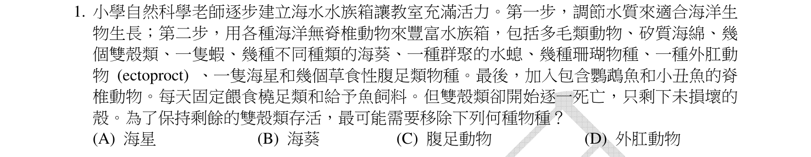
本地原卷PDF2 · 同年原答案PDF1（封存轉存本） · 已核對同年釋疑PDF2–4（未列本題）
官方採計／來源：A 原答案：A
未列已取得同年公告的7筆生物釋疑；依原表記錄，不宣稱沒有其他公告
主分類：Ch33 An Introduction to Invertebrates
33.5 / Echinoderms
目錄行2140；條目起始印刷頁713；實際目錄 PDF44
次分類：Ch33 An Introduction to Invertebrates
33.3 / Molluscs
目錄行2120；條目起始印刷頁699；實際目錄 PDF44
主分類理由：33.5 / Echinoderms：以海星翻胃攝食解釋雙殼貝殼完整，直接對應棘皮動物特徵。
次分類理由：33.3 / Molluscs：雙殼類殼與攝食方式是被捕食者判讀依據。
科學說明：原表A。海星可將胃伸入微開的貝殼消化軟體；殼完整不能推出未被捕食。題幹限定腹足類為草食者，不把所有腹足類都說成草食。
來源涵蓋範圍：依實際最小目錄與正文；另具名補充的實讀範圍和取得限制見來源紀錄。正文小標不冒充目錄。
教材正文：印刷699／PDF748、印刷700／PDF749、印刷701／PDF750、印刷713／PDF762、印刷714／PDF763
補充來源：本題未另列課本外來源
另行比較：海葵、外肛動物或草食性腹足類是否同樣能留下空殼
重看完整物種清單及A–D，海星翻胃與雙殼貝殼完整最直接吻合；主棘皮、次軟體保留。
結論：證據確認，分類疑義已解決。完整覆核紀錄
Q02 · 34.3 / Derived Characters of Gnathostomes 正式分類
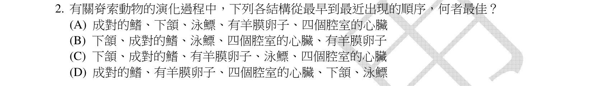
本地原卷PDF2 · 同年原答案PDF1（封存轉存本） · 已核對同年釋疑PDF2–4（未列本題）
官方採計／來源：A 原答案：A
未列已取得同年公告的7筆生物釋疑；依原表記錄，不宣稱沒有其他公告
主分類：Ch34 The Origin and Evolution of Vertebrates
34.3 / Derived Characters of Gnathostomes
目錄行2183；條目起始印刷頁725；實際目錄 PDF44
次分類：Ch34 The Origin and Evolution of Vertebrates
34.2 / Early Vertebrate Evolution
目錄行2176；條目起始印刷頁724；實際目錄 PDF44
次分類：Ch34 The Origin and Evolution of Vertebrates
34.3 / Ray-Finned Fishes and Lobe-Fins
目錄行2192；條目起始印刷頁728；實際目錄 PDF44
次分類：Ch34 The Origin and Evolution of Vertebrates
34.5 / Derived Characters of Amniotes
目錄行2212；條目起始印刷頁734；實際目錄 PDF44
次分類：Ch34 The Origin and Evolution of Vertebrates
34.5 / Reptiles
目錄行2218；條目起始印刷頁735；實際目錄 PDF44
次分類：Ch34 The Origin and Evolution of Vertebrates
34.6 / Derived Characters of Mammals
目錄行2225；條目起始印刷頁741；實際目錄 PDF44
主分類理由：34.3 / Derived Characters of Gnathostomes：有頜類的衍徵及分支位置是五特徵排序的骨架。
次分類理由：34.2 / Early Vertebrate Evolution：成對鰭已出現於部分無頜祖先；34.3 / Ray-Finned Fishes and Lobe-Fins：硬骨魚鰾演化在有頜之後；34.5 / Derived Characters of Amniotes：羊膜卵界定羊膜動物；34.5 / Reptiles：爬行類分支提供羊膜特徵位置；34.6 / Derived Characters of Mammals：哺乳類正文741明列四腔心
科學說明：原表A：成對鰭→上下顎→魚鰾→羊膜卵→四腔心。教材728指出鰾由肺演化而來，不能反推肺由鰾產生；這是題列特徵順序，不是所有現生類群排成直線，四腔心可在不同支系演化。
來源涵蓋範圍：依實際最小目錄與正文；另具名補充的實讀範圍和取得限制見來源紀錄。正文小標不冒充目錄。
教材正文：印刷724／PDF773、印刷725／PDF774、印刷726／PDF775、印刷728／PDF777、印刷729／PDF778、印刷734／PDF783、印刷735／PDF784、印刷736／PDF785、印刷741／PDF790
補充來源：本題未另列課本外來源
另行比較：四腔心和羊膜卵位置是否顛倒，游鰾是否早於顎
逐項對回A順序與724–741分支；成對鰭先於顎，羊膜早於題列四腔心；同章五次條目保留並去重统计。
結論：證據確認，分類疑義已解決。完整覆核紀錄
Q03 · 41.5 / Regulation of Energy Storage 正式分類
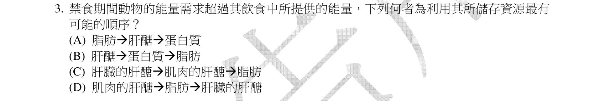
本地原卷PDF2 · 同年原答案PDF1（封存轉存本） · 已核對同年釋疑PDF2–4（未列本題）
官方採計／來源：C 原答案：C
未列已取得同年公告的7筆生物釋疑；依原表記錄，不宣稱沒有其他公告
主分類：Ch41 Animal Nutrition
41.5 / Regulation of Energy Storage
目錄行2743；條目起始印刷頁915；實際目錄 PDF46
主分類理由：41.5 / Regulation of Energy Storage：飢餓時糖原與脂肪動員屬能量儲存調節。
次分類理由：無另列最小次目；原圖C完整，教材915用and連接後兩者，故採C並明列嚴格順序的簡化，不改成脂肪先耗盡。
科學說明：原表C。教材915先列肝糖原，再動用肌糖原與脂肪；它未把肌糖原與脂肪寫成絕不重疊的兩階段。原題嚴格順序是簡化，肌糖原主要供肌肉自身使用，不等於直接釋出血糖。
來源涵蓋範圍：依實際最小目錄與正文；另具名補充的實讀範圍和取得限制見來源紀錄。正文小標不冒充目錄。
教材正文：印刷915／PDF964、印刷916／PDF965、印刷917／PDF966
補充來源：本題未另列課本外來源
另行比較：肝糖原、肌糖原、脂肪是否互斥使用
原圖C完整，教材915用and連接後兩者，故採C並明列嚴格順序的簡化，不改成脂肪先耗盡。
結論：證據確認，分類疑義已解決。完整覆核紀錄
Q04 · 41.5 / Regulation of Energy Storage 正式分類
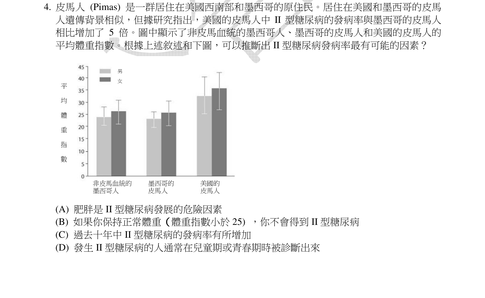
本地原卷PDF2 · 同年原答案PDF1（封存轉存本） · 已核對同年釋疑PDF2–4（未列本題）
官方採計／來源：A 原答案：A
未列已取得同年公告的7筆生物釋疑；依原表記錄，不宣稱沒有其他公告
主分類：Ch41 Animal Nutrition
41.5 / Regulation of Energy Storage
目錄行2743；條目起始印刷頁915；實際目錄 PDF46
次分類：Ch41 Animal Nutrition
41.5 / Regulation of Appetite and Consumption
目錄行2746；條目起始印刷頁917；實際目錄 PDF46
主分類理由：41.5 / Regulation of Energy Storage：BMI圖與能量儲存、肥胖風險直接相關。
次分類理由：41.5 / Regulation of Appetite and Consumption：食慾荷爾蒙是題目所涉及儲能恆定的相關調節
科學說明：原表A。完整圖中美國Pima男女BMI皆較墨西哥兩組高，支持生活環境與肥胖、糖尿病風險的關聯；不是環境唯一因果證明，BMI正常仍可能罹病，橫斷圖不能推出逐年上升。圖的男女圖例及誤差棒均保留。
來源涵蓋範圍：依實際最小目錄與正文；另具名補充的實讀範圍和取得限制見來源紀錄。正文小標不冒充目錄。
教材正文：印刷915／PDF964、印刷916／PDF965、印刷917／PDF966、印刷918／PDF967
補充來源：本題未另列課本外來源
另行比較：誤差棒及男女圖例能否支持「不會罹病」或時間趨勢
三組兩性柱及選項完整；僅風險關聯支持A，無縱向觀察。能量儲存為主、食慾調節為次。
結論：證據確認，分類疑義已解決。完整覆核紀錄
Q05 · 33.2 / Anthozoans 正式分類
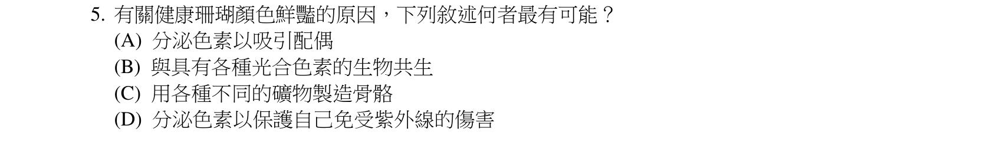
本地原卷PDF3 · 同年原答案PDF1（封存轉存本） · 已核對同年釋疑PDF2–4（未列本題）
官方採計／來源：B 原答案：B
未列已取得同年公告的7筆生物釋疑；依原表記錄，不宣稱沒有其他公告
主分類：Ch33 An Introduction to Invertebrates
33.2 / Anthozoans
目錄行2104；條目起始印刷頁693；實際目錄 PDF44
次分類：Ch28 Protists
28.6 / Symbiotic Protists
目錄行1847；條目起始印刷頁614；實際目錄 PDF42
主分類理由：33.2 / Anthozoans：珊瑚屬刺絲胞動物，需辨其共生與顏色。
次分類理由：28.6 / Symbiotic Protists：教材614明列珊瑚與光合渦鞭毛藻互利共生
科學說明：原表B。共生藻的光合色素是本題預期來源；不能把珊瑚所有顏色都歸於藻而排除宿主色素，也不能由顏色單獨推定共生者種類。
來源涵蓋範圍：依實際最小目錄與正文；另具名補充的實讀範圍和取得限制見來源紀錄。正文小標不冒充目錄。
教材正文：印刷614／PDF663、印刷615／PDF664、印刷693／PDF742
補充來源：本題未另列課本外來源
Q06 · 28.6 / Symbiotic Protists 正式分類
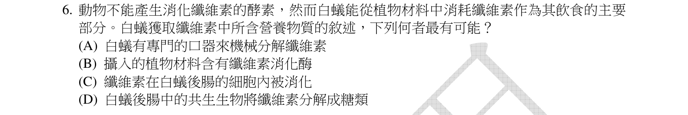
本地原卷PDF3 · 同年原答案PDF1（封存轉存本） · 已核對同年釋疑PDF2–4（未列本題）
官方採計／來源：D 原答案：D
未列已取得同年公告的7筆生物釋疑；依原表記錄，不宣稱沒有其他公告
主分類：Ch28 Protists
28.6 / Symbiotic Protists
目錄行1847；條目起始印刷頁614；實際目錄 PDF42
次分類：Ch41 Animal Nutrition
41.4 / Mutualistic Adaptations
目錄行2733；條目起始印刷頁912；實際目錄 PDF46
主分類理由：28.6 / Symbiotic Protists：教材614直接以白蟻腸道共生原生生物分解木材為例。
次分類理由：41.4 / Mutualistic Adaptations：消化互利適應正文912–914提供一般機制比較，該節以脊椎動物為主，未把白蟻誤歸脊椎動物
科學說明：原表D。共生微生物協助分解纖維素；但題幹「動物不能產生纖維素分解酵素」不是通則。1998原始研究已辨白蟻自身RsEG基因；2024研究區分細菌、古菌及部分白蟻的原生生物。不能泛稱全部白蟻只靠原生生物。
來源涵蓋範圍：依實際最小目錄與正文；另具名補充的實讀範圍和取得限制見來源紀錄。正文小標不冒充目錄。
教材正文：印刷614／PDF663、印刷615／PDF664、印刷912／PDF961、印刷913／PDF962、印刷914／PDF963
補充來源：S01、S05
另行比較：題幹動物都沒有纖維素酶是否可接受
原題確實作此全稱；1998 RsEG與2024研究反例明确。改採直接白蟻實例的Symbiotic Protists為主，消化互利機制為次，不以反例否定D共生作用。
結論：證據確認，分類疑義已解決。完整覆核紀錄
Q07 · 42.5 / Tracheal Systems in Insects 正式分類
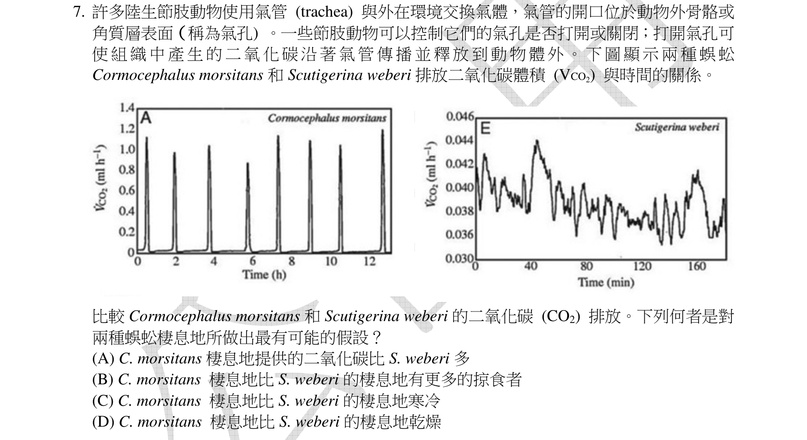
本地原卷PDF3 · 同年原答案PDF1（封存轉存本） · 已核對同年釋疑PDF2–4（未列本題）
官方採計／來源：D 原答案：D
未列已取得同年公告的7筆生物釋疑；依原表記錄，不宣稱沒有其他公告
主分類：Ch42 Circulation and Gas Exchange
42.5 / Tracheal Systems in Insects
目錄行2824；條目起始印刷頁941；實際目錄 PDF46
次分類：Ch44 Osmoregulation and Excretion
44.1 / Osmoregulatory Challenges and Mechanisms
目錄行2944；條目起始印刷頁978；實際目錄 PDF47
主分類理由：42.5 / Tracheal Systems in Insects：氣門與氣管交換造成CO2間歇釋放；目錄最小相關機制條目以昆蟲命名，題中蜈蚣並非昆蟲。
次分類理由：44.1 / Osmoregulatory Challenges and Mechanisms：陸生動物減少水分流失連結呼吸與滲透調節
科學說明：原表D。左圖Cormocephalus morsitans為間歇交換，右Scutigerina weberi較連續；左橫軸hours、右minutes，不直接比尖峰高度推總代謝。減少氣門開啟可降低水分流失，較乾棲地是可檢驗假說，單圖不能證實實際棲地或排除其他交換調節因素。
來源涵蓋範圍：依實際最小目錄與正文；另具名補充的實讀範圍和取得限制見來源紀錄。正文小標不冒充目錄。
教材正文：印刷941／PDF990、印刷942／PDF991、印刷978／PDF1027、印刷979／PDF1028、印刷980／PDF1029
補充來源：本題未另列課本外來源
另行比較：圖中蜈蚣可否當昆蟲，兩圖橫軸是否相同
兩種蜈蚣與兩種時間單位完整；主條目昆蟲標題只是氣管機制映射，科學分類未說蜈蚣為昆蟲。乾燥為假說而非棲地實測。
結論：證據確認，分類疑義已解決。完整覆核紀錄
Q08 · 45.1 / Cellular Hormone Response Pathways 正式分類
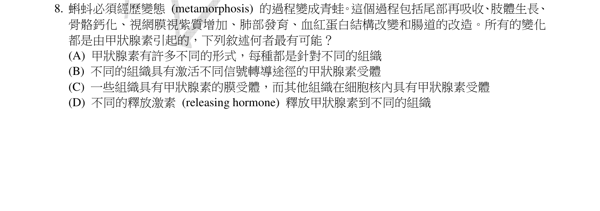
本地原卷PDF3 · 同年原答案PDF1（封存轉存本） · 已核對同年釋疑PDF2–4（未列本題）
官方採計／來源：B 原答案：B
未列已取得同年公告的7筆生物釋疑；依原表記錄，不宣稱沒有其他公告
主分類：Ch45 Hormones and the Endocrine System
45.1 / Cellular Hormone Response Pathways
目錄行3004；條目起始印刷頁1002；實際目錄 PDF47
次分類：Ch45 Hormones and the Endocrine System
45.3 / Evolution of Hormone Function
目錄行3048；條目起始印刷頁1015；實際目錄 PDF47
主分類理由：45.1 / Cellular Hormone Response Pathways：同一激素在不同標的細胞引發不同反應路徑。
次分類理由：45.3 / Evolution of Hormone Function：甲狀腺激素參與變態是激素功能演化的具體例子
科學說明：原表B。不同組織的受體、調控蛋白和基因表現背景使甲狀腺激素造成蝌蚪尾退化或四肢生長；不是激素本身每次換成另一種。脂溶性甲狀腺激素可經細胞內受體作用，不能強制解讀為只經膜受體。
來源涵蓋範圍：依實際最小目錄與正文；另具名補充的實讀範圍和取得限制見來源紀錄。正文小標不冒充目錄。
教材正文：印刷1001／PDF1050、印刷1002／PDF1051、印刷1003／PDF1052、印刷1015／PDF1064、印刷1016／PDF1065
補充來源：本題未另列課本外來源
另行比較：差異是否由不同甲狀腺素或釋放激素定向派送
B指標的細胞路徑差異，45.1直接、45.3變態例為次；未以C的膜與核二分法作唯一原因。
結論：證據確認，分類疑義已解決。完整覆核紀錄
Q09 · 46.3 / Gametogenesis 正式分類
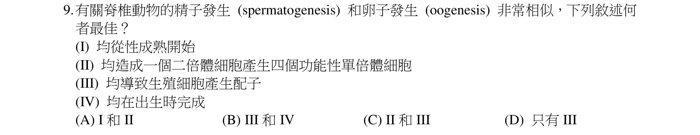
本地原卷PDF4 · 同年原答案PDF1（封存轉存本） · 已核對同年釋疑PDF2–4（未列本題）
官方採計／來源：D 原答案：D
未列已取得同年公告的7筆生物釋疑；依原表記錄，不宣稱沒有其他公告
主分類：Ch46 Animal Reproduction
46.3 / Gametogenesis
目錄行3091；條目起始印刷頁1027；實際目錄 PDF48
主分類理由：46.3 / Gametogenesis：比較精子與卵形成的細胞分裂和功能配子數。
次分類理由：無另列最小次目；重看III為「均導致生殖細胞產生配子」，修正首稿非逐字引句；D不變。功能配子數與發生時序分別核對。
科學說明：原表D，僅III「均導致生殖細胞產生配子」共同。卵生成的不對稱胞質分裂只產一大卵及極體；題幹泛稱脊椎動物，不能把人類胎兒卵母細胞開始減數分裂的時序套用到所有物種。
來源涵蓋範圍：依實際最小目錄與正文；另具名補充的實讀範圍和取得限制見來源紀錄。正文小標不冒充目錄。
教材正文：印刷1027／PDF1076、印刷1028／PDF1077、印刷1029／PDF1078、印刷1030／PDF1079
補充來源：本題未另列課本外來源
另行比較：III原文字意及I、II、IV排除
重看III為「均導致生殖細胞產生配子」，修正首稿非逐字引句；D不變。功能配子數與發生時序分別核對。
結論：證據確認，分類疑義已解決。完整覆核紀錄
Q10 · 47.3 / Cell Fate Determination and Pattern Formation by Inductive Signals 正式分類
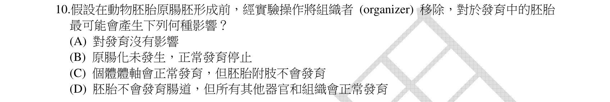
本地原卷PDF4 · 同年原答案PDF1（封存轉存本） · 同年釋疑轉存PDF2
官方採計／來源：B 原答案：B
維持原答案B
主分類：Ch47 Animal Development
47.3 / Cell Fate Determination and Pattern Formation by Inductive Signals
目錄行3169；條目起始印刷頁1061；實際目錄 PDF48
次分類：Ch47 Animal Development
47.2 / Gastrulation
目錄行3144；條目起始印刷頁1049；實際目錄 PDF48
主分類理由：47.3 / Cell Fate Determination and Pattern Formation by Inductive Signals：組織者誘導鄰近細胞形成體軸，最小目錄為誘導訊號下細胞決定與模式形成。
次分類理由：47.2 / Gastrulation：原腸胚形成提供被影響的形態發生程序
科學說明：原表B，已得釋疑亦維持B。教材1062的移植實驗支持誘導體軸及原腸運動，不直接證明任何動物、任何切除範圍都使全部原腸形成停止。goosecoid研究的誘導及擾動結果也具物種、時期及處理範圍，保留原題概括過廣限制。
來源涵蓋範圍：依實際最小目錄與正文；另具名補充的實讀範圍和取得限制見來源紀錄。正文小標不冒充目錄。
教材正文：印刷1049／PDF1098、印刷1050／PDF1099、印刷1051／PDF1100、印刷1052／PDF1101、印刷1061／PDF1110、印刷1062／PDF1111
補充來源：S06
另行比較：移除組織者是否只阻腸或讓體軸正常
原圖與同年公告均B；1062移植是誘導證據，保留切除範圍和動物類群限制，主誘導、次原腸形成。
結論：證據確認，分類疑義已解決。完整覆核紀錄
Q11 · 46.4 / Hormonal Control of Female Reproductive Cycles 正式分類
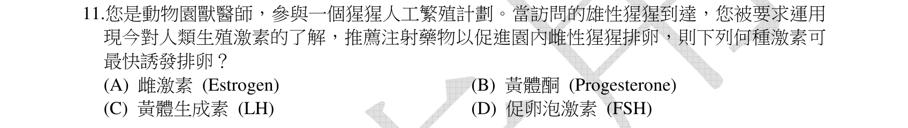
本地原卷PDF4 · 同年原答案PDF1（封存轉存本） · 已核對同年釋疑PDF2–4（未列本題）
官方採計／來源：C 原答案：C
未列已取得同年公告的7筆生物釋疑；依原表記錄，不宣稱沒有其他公告
主分類：Ch46 Animal Reproduction
46.4 / Hormonal Control of Female Reproductive Cycles
目錄行3104；條目起始印刷頁1032；實際目錄 PDF48
主分類理由：46.4 / Hormonal Control of Female Reproductive Cycles：LH高峰與排卵屬雌性生殖週期荷爾蒙控制。
次分類理由：無另列最小次目；題幹確實問最快；LH峰最直接，主雌性週期；沒有把獸醫情境變成未提供劑量的處方。
科學說明：原表C。LH是選項中最直接促排卵訊號；FSH先促濾泡生長，雌激素正回饋位在上游。題意是生理機制比較，不從題目產生動物用藥劑量。
來源涵蓋範圍：依實際最小目錄與正文；另具名補充的實讀範圍和取得限制見來源紀錄。正文小標不冒充目錄。
教材正文：印刷1032／PDF1081、印刷1033／PDF1082、印刷1034／PDF1083
補充來源：本題未另列課本外來源
另行比較：FSH、雌激素或黃體酮是否為最快排卵因子
題幹確實問最快；LH峰最直接，主雌性週期；沒有把獸醫情境變成未提供劑量的處方。
結論：證據確認，分類疑義已解決。完整覆核紀錄
Q12 · 50.5 / Vertebrate Skeletal Muscle 正式分類
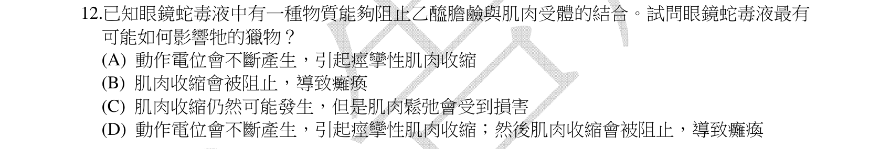
本地原卷PDF4 · 同年原答案PDF1（封存轉存本） · 已核對同年釋疑PDF2–4（未列本題）
官方採計／來源：B 原答案：B
未列已取得同年公告的7筆生物釋疑；依原表記錄，不宣稱沒有其他公告
主分類：Ch50 Sensory and Motor Mechanisms
50.5 / Vertebrate Skeletal Muscle
目錄行3381；條目起始印刷頁1126；實際目錄 PDF49
次分類：Ch48 Neurons, Synapses, and Signaling
48.4 / Neurotransmitters
目錄行3231；條目起始印刷頁1080；實際目錄 PDF48
主分類理由：50.5 / Vertebrate Skeletal Muscle：神經肌肉接點訊號受阻導致骨骼肌無法正常收縮。
次分類理由：48.4 / Neurotransmitters：乙醯膽鹼作為運動神經末端傳遞物是直接作用位置
科學說明：原表B。抑制骨骼肌乙醯膽鹼受體會降低終板去極化、鈣釋放及收縮，可致麻痺；不是抑制乙醯膽鹼酯酶造成持續刺激，不能推論神經軸突的動作電位本身被直接阻止。
來源涵蓋範圍：依實際最小目錄與正文；另具名補充的實讀範圍和取得限制見來源紀錄。正文小標不冒充目錄。
教材正文：印刷1080／PDF1129、印刷1081／PDF1130、印刷1126／PDF1175、印刷1127／PDF1176、印刷1128／PDF1177、印刷1129／PDF1178、印刷1130／PDF1179
補充來源：本題未另列課本外來源
Q13 · 34.3 / Ray-Finned Fishes and Lobe-Fins 正式分類
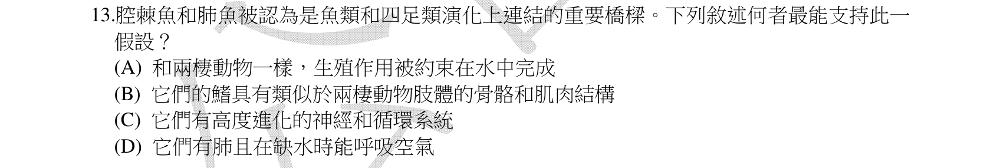
本地原卷PDF4 · 同年原答案PDF1（封存轉存本） · 已核對同年釋疑PDF2–4（未列本題）
官方採計／來源：B 原答案：B
未列已取得同年公告的7筆生物釋疑；依原表記錄，不宣稱沒有其他公告
主分類：Ch34 The Origin and Evolution of Vertebrates
34.3 / Ray-Finned Fishes and Lobe-Fins
目錄行2192；條目起始印刷頁728；實際目錄 PDF44
次分類：Ch34 The Origin and Evolution of Vertebrates
34.4 / The Origin of Tetrapods
目錄行2202；條目起始印刷頁731；實際目錄 PDF44
次分類：Ch22 Descent with Modification: A Darwinian View of Life
22.3 / Homology
目錄行1412；條目起始印刷頁479；實際目錄 PDF41
主分類理由：34.3 / Ray-Finned Fishes and Lobe-Fins：肉鰭魚的骨骼與肌肉支撐附肢是接近四足類的核心證據。
次分類理由：34.4 / The Origin of Tetrapods：四足動物附肢衍徵對照；22.3 / Homology：同源構造是比較推理的方法
科學說明：原表B。成對肉質鰭內骨骼、肌肉與四足類肢的同源性支持關係；現生肉鰭魚不是現生四足動物的直接祖先，也不能把肺魚的空氣呼吸概括為所有現生肉鰭類完全相同。
來源涵蓋範圍：依實際最小目錄與正文；另具名補充的實讀範圍和取得限制見來源紀錄。正文小標不冒充目錄。
教材正文：印刷479／PDF528、印刷480／PDF529、印刷728／PDF777、印刷729／PDF778、印刷730／PDF779、印刷731／PDF780
補充來源：本題未另列課本外來源
另行比較：肺與水中生殖是否比同源附肢更有力
B的骨骼肌肉構造直接；D不能概括腔棘魚與肺魚所有成員；肉鰭、四足、同源三條分存。
結論：證據確認，分類疑義已解決。完整覆核紀錄
Q14 · 34.6 / Eutherians (Placental Mammals) 正式分類
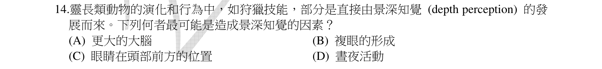
本地原卷PDF4 · 同年原答案PDF1（封存轉存本） · 已核對同年釋疑PDF2–4（未列本題）
官方採計／來源：C 原答案：C
未列已取得同年公告的7筆生物釋疑；依原表記錄，不宣稱沒有其他公告
主分類：Ch34 The Origin and Evolution of Vertebrates
34.6 / Eutherians (Placental Mammals)
目錄行2237；條目起始印刷頁744；實際目錄 PDF44
次分類：Ch50 Sensory and Motor Mechanisms
50.3 / The Vertebrate Visual System
目錄行3364；條目起始印刷頁1119；實際目錄 PDF49
主分類理由：34.6 / Eutherians (Placental Mammals)：靈長類正文位於真實目錄Eutherians之下，不能另造Primates目錄葉。
次分類理由：50.3 / The Vertebrate Visual System：雙眼重疊視野連結脊椎動物視覺系統
科學說明：原表C。朝前雙眼的視野重疊可支持立體視覺和距離判斷。不是單眼焦距變化的同義詞，也不把所有哺乳類都視為朝前雙眼。
來源涵蓋範圍：依實際最小目錄與正文；另具名補充的實讀範圍和取得限制見來源紀錄。正文小標不冒充目錄。
教材正文：印刷744／PDF793、印刷745／PDF794、印刷746／PDF795、印刷747／PDF796、印刷1119／PDF1168、印刷1120／PDF1169、印刷1121／PDF1170、印刷1122／PDF1171
補充來源：本題未另列課本外來源
另行比較：較大腦或晝夜行為是否直接造成深度知覺
原圖C雙眼位置最直接；最小目錄Eutherians而非正文Primates小標，视觉系統為次。
結論：證據確認，分類疑義已解決。完整覆核紀錄
Q15 · 36.5 / Bulk Flow by Positive Pressure: The Mechanism of Translocation in Angiosperms 正式分類
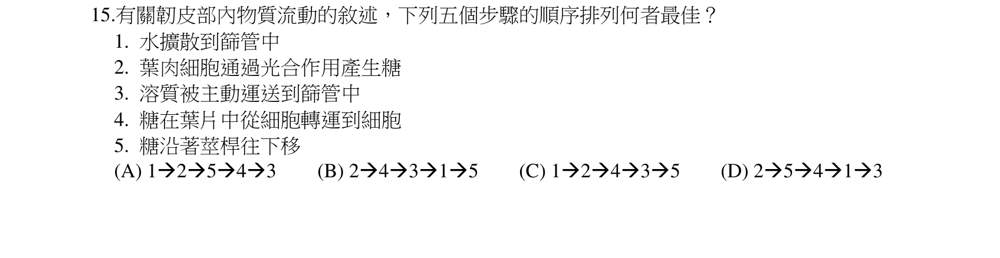
本地原卷PDF4 · 同年原答案PDF1（封存轉存本） · 已核對同年釋疑PDF2–4（未列本題）
官方採計／來源：B 原答案：B
未列已取得同年公告的7筆生物釋疑；依原表記錄，不宣稱沒有其他公告
主分類：Ch36 Resource Acquisition and Transport in Vascular Plants
36.5 / Bulk Flow by Positive Pressure: The Mechanism of Translocation in Angiosperms
目錄行2413；條目起始印刷頁800；實際目錄 PDF45
次分類：Ch36 Resource Acquisition and Transport in Vascular Plants
36.5 / Movement from Sugar Sources to Sugar Sinks
目錄行2410；條目起始印刷頁799；實際目錄 PDF45
主分類理由：36.5 / Bulk Flow by Positive Pressure: The Mechanism of Translocation in Angiosperms：五步排序以篩管壓力流機制為核心。
次分類理由：36.5 / Movement from Sugar Sources to Sugar Sinks：糖由源到庫及源端裝載提供壓力梯度起點
科學說明：原表B，2→4→3→1→5：葉肉光合產糖→葉片細胞間轉糖→主動裝入篩管→水滲入→沿莖下移。沿莖向下只適用本題源庫配置；不同篩管可向不同庫運輸，並非所有植物所有裝載均必須主動耗ATP。
來源涵蓋範圍：依實際最小目錄與正文；另具名補充的實讀範圍和取得限制見來源紀錄。正文小標不冒充目錄。
教材正文：印刷799／PDF848、印刷800／PDF849、印刷801／PDF850
補充來源：本題未另列課本外來源
另行比較：五項文字能否逐一對上2→4→3→1→5
首稿步驟解說誤把卸糖列為第5，已修正為光合產糖→葉片細胞間轉糖→主動裝糖→水滲入→沿莖下移。保留原稿與修訂，B及壓力流分類不變。
結論：證據確認，分類疑義已解決。完整覆核紀錄
Q16 · 30.1 / The Evolutionary Advantage of Seeds 正式分類
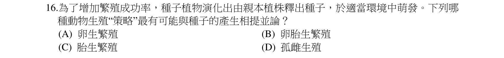
本地原卷PDF5 · 同年原答案PDF1（封存轉存本） · 已核對同年釋疑PDF2–4（未列本題）
官方採計／來源：A 原答案：A
未列已取得同年公告的7筆生物釋疑；依原表記錄，不宣稱沒有其他公告
主分類：Ch30 Plant Diversity II: The Evolution of Seed Plants
30.1 / The Evolutionary Advantage of Seeds
目錄行1919；條目起始印刷頁639；實際目錄 PDF43
次分類：Ch46 Animal Reproduction
46.2 / Ensuring the Survival of Offspring
目錄行3075；條目起始印刷頁1023；實際目錄 PDF47
主分類理由：30.1 / The Evolutionary Advantage of Seeds：種子包覆胚與營養的功能最接近卵生的保護包裹。
次分類理由：46.2 / Ensuring the Survival of Offspring：卵生、胎生與後代保護比較補充類比依據
科學說明：原表A。種子與卵生皆可在保護構造內提供胚營養，但此為功能類比，非同源器官。種子受精在母株，不可因此說所有卵生動物都體外受精。
來源涵蓋範圍：依實際最小目錄與正文；另具名補充的實讀範圍和取得限制見來源紀錄。正文小標不冒充目錄。
教材正文：印刷638／PDF687、印刷639／PDF688、印刷640／PDF689、印刷1022／PDF1071、印刷1023／PDF1072
補充來源：本題未另列課本外來源
Q17 · 50.3 / The Vertebrate Visual System 正式分類
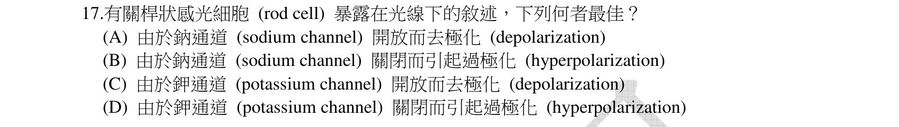
本地原卷PDF5 · 同年原答案PDF1（封存轉存本） · 已核對同年釋疑PDF2–4（未列本題）
官方採計／來源：B 原答案：B
未列已取得同年公告的7筆生物釋疑；依原表記錄，不宣稱沒有其他公告
主分類：Ch50 Sensory and Motor Mechanisms
50.3 / The Vertebrate Visual System
目錄行3364；條目起始印刷頁1119；實際目錄 PDF49
主分類理由：50.3 / The Vertebrate Visual System：視桿細胞光訊號轉換在脊椎動物視覺系統最小條目。
次分類理由：無另列最小次目；原圖D中文鈉通道、英文potassium channel不一致，新增明示；B關閉鈉通道並超極化不受此排版差異影響。
科學說明：原表B。原圖D中文寫鈉通道而英文為potassium channel，兩者不一致，原圖照存。光活化色素後cGMP下降，陽離子通道關閉，視桿細胞超極化並減少麩胺酸釋放；不是照光讓鈉通道打開，視桿受體電位亦非自己產生的全有全無動作電位。
來源涵蓋範圍：依實際最小目錄與正文；另具名補充的實讀範圍和取得限制見來源紀錄。正文小標不冒充目錄。
教材正文：印刷1119／PDF1168、印刷1120／PDF1169、印刷1121／PDF1170、印刷1122／PDF1171
補充來源：本題未另列課本外來源
另行比較：D中中文鈉與英文potassium是否一致
原圖D中文鈉通道、英文potassium channel不一致，新增明示；B關閉鈉通道並超極化不受此排版差異影響。
結論：證據確認，分類疑義已解決。完整覆核紀錄
Q18 · 44.3 / Survey of Excretory Systems 正式分類
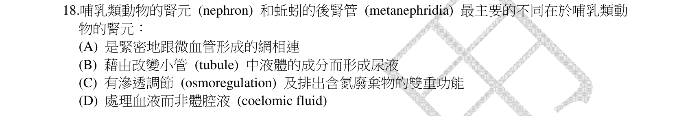
本地原卷PDF5 · 同年原答案PDF1（封存轉存本） · 同年釋疑轉存PDF3
官方採計／來源：D 原答案：D
維持原答案D
主分類：Ch44 Osmoregulation and Excretion
44.3 / Survey of Excretory Systems
目錄行2967；條目起始印刷頁984；實際目錄 PDF47
次分類：Ch44 Osmoregulation and Excretion
44.4 / From Blood Filtrate to Urine: A Closer Look
目錄行2974；條目起始印刷頁987；實際目錄 PDF47
主分類理由：44.3 / Survey of Excretory Systems：比較腎元與後腎管的原尿來源及排泄系統構造。
次分類理由：44.4 / From Blood Filtrate to Urine: A Closer Look：腎元血液過濾與後續修改需對照血液到尿液程序
科學說明：原表D，釋疑維持D。腎元濾液來自血液，蚯蚓後腎管由腎口接受體腔液；兩者都可配合血管進行選擇性再吸收。公告稱腎元在皮質是簡略說法，部分亨利氏環深入髓質。
來源涵蓋範圍：依實際最小目錄與正文；另具名補充的實讀範圍和取得限制見來源紀錄。正文小標不冒充目錄。
教材正文：印刷984／PDF1033、印刷985／PDF1034、印刷986／PDF1035、印刷987／PDF1036、印刷988／PDF1037
補充來源：本題未另列課本外來源
另行比較：血管、管液修改或雙重排泄功能是否為主要差異
三者並非腎元獨有，D血液相對體腔液是核心；公告皮質表述過窄保留。
結論：證據確認，分類疑義已解決。完整覆核紀錄
Q19 · 18.2 / Regulation of Chromatin Structure 正式分類
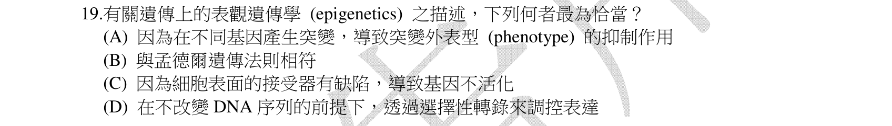
本地原卷PDF5 · 同年原答案PDF1（封存轉存本） · 已核對同年釋疑PDF2–4（未列本題）
官方採計／來源：D 原答案：D
未列已取得同年公告的7筆生物釋疑；依原表記錄，不宣稱沒有其他公告
主分類：Ch18 Regulation of Gene Expression
18.2 / Regulation of Chromatin Structure
目錄行1123；條目起始印刷頁371；實際目錄 PDF39
主分類理由：18.2 / Regulation of Chromatin Structure：表觀遺傳以染色質修飾造成持續基因表現變化，對應染色質結構調節。
次分類理由：無另列最小次目；D最接近不改DNA的調控；需染色質穩定調控範圍，未把普通瞬時表現皆稱表觀遺傳。
科學說明：原表D。DNA甲基化、組蛋白修飾等可在不改DNA鹼基序列下調節表現；選項D的選擇性表現只是寬泛描述，並非所有瞬時轉錄變化都必然屬可遺傳表觀遺傳。
來源涵蓋範圍：依實際最小目錄與正文；另具名補充的實讀範圍和取得限制見來源紀錄。正文小標不冒充目錄。
教材正文：印刷371／PDF420、印刷372／PDF421、印刷373／PDF422
補充來源：本題未另列課本外來源
另行比較：表觀遺傳是否等於突變抑制或任何轉錄變化
D最接近不改DNA的調控；需染色質穩定調控範圍，未把普通瞬時表現皆稱表觀遺傳。
結論：證據確認，分類疑義已解決。完整覆核紀錄
Q20 · 17.3 / Alteration of mRNA Ends 正式分類
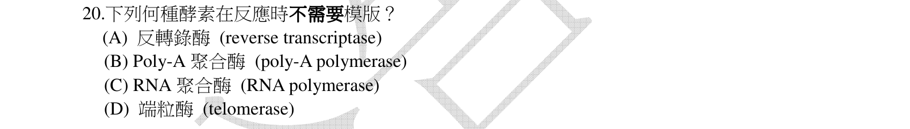
本地原卷PDF5 · 同年原答案PDF1（封存轉存本） · 已核對同年釋疑PDF2–4（未列本題）
官方採計／來源：B 原答案：B
未列已取得同年公告的7筆生物釋疑；依原表記錄，不宣稱沒有其他公告
主分類：Ch17 Gene Expression: From Gene to Protein
17.3 / Alteration of mRNA Ends
目錄行1059；條目起始印刷頁345；實際目錄 PDF39
次分類：Ch16 The Molecular Basis of Inheritance
16.2 / Replicating the Ends of DNA Molecules
目錄行1019；條目起始印刷頁328；實際目錄 PDF39
主分類理由：17.3 / Alteration of mRNA Ends：poly(A)尾形成屬真核轉录後RNA加工。
次分類理由：16.2 / Replicating the Ends of DNA Molecules：端粒酶使用內建RNA模板，與不需模板的poly(A)聚合酶對照
科學說明：原表B。poly(A)聚合酶以ATP在RNA的3′端添A，不需核酸模板，但仍需受體RNA的3′OH。端粒酶有RNA模板，反轉錄酶及一般轉錄RNA聚合酶亦使用模板。
來源涵蓋範圍：依實際最小目錄與正文；另具名補充的實讀範圍和取得限制見來源紀錄。正文小標不冒充目錄。
教材正文：印刷328／PDF377、印刷329／PDF378、印刷330／PDF379、印刷345／PDF394、印刷346／PDF395
補充來源：S07
另行比較：poly(A)聚合酶仍需RNA是否代表需要模板
不需模板不等於不需受體RNA；聚A尾為主、端粒模板對照為次，研究補充酵素機制。
結論：證據確認，分類疑義已解決。完整覆核紀錄
Q21 · 49.1 / Glia 正式分類
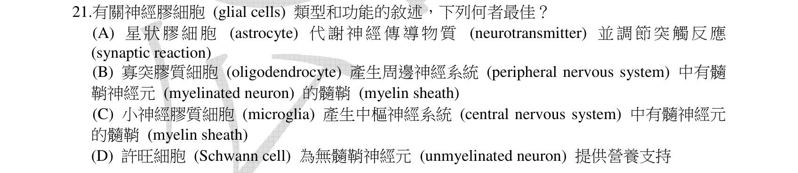
本地原卷PDF5 · 同年原答案PDF1（封存轉存本） · 已核對同年釋疑PDF2–4（未列本題）
官方採計／來源：A 原答案：A
未列已取得同年公告的7筆生物釋疑；依原表記錄，不宣稱沒有其他公告
主分類：Ch49 Nervous Systems
49.1 / Glia
目錄行3248；條目起始印刷頁1090；實際目錄 PDF48
次分類：Ch48 Neurons, Synapses, and Signaling
48.3 / Conduction of Action Potentials
目錄行3212；條目起始印刷頁1075；實際目錄 PDF48
主分類理由：49.1 / Glia：星狀膠細胞、微膠細胞、Schwann細胞與寡樹突膠細胞功能辨認。
次分類理由：48.3 / Conduction of Action Potentials：有髓傳導提供Schwann與寡樹突功能對照
科學說明：原表A。教材1090支持星狀膠細胞促進訊息傳遞；B混淆中樞與周邊，C混淆免疫防禦。但D所述Schwann細胞也可提供支持並非一般科學錯誤：2023研究顯示非髓鞘Schwann細胞的營養支持訊號。現有公告未列Q21，記錄答案唯一性的疑慮而不自行改採D。
來源涵蓋範圍：依實際最小目錄與正文；另具名補充的實讀範圍和取得限制見來源紀錄。正文小標不冒充目錄。
教材正文：印刷1075／PDF1124、印刷1076／PDF1125、印刷1090／PDF1139、印刷1091／PDF1140
補充來源：S02
另行比較：D對無髓鞘神經元的營養支持是否真錯
原圖D確實如此，非把myelinated誤讀；非髓鞘Schwann研究支持限制，保留官方A與答案唯一性疑慮，分類Glia確定。
結論：證據確認，分類疑義已解決。完整覆核紀錄
Q22 · 48.3 / Conduction of Action Potentials 正式分類
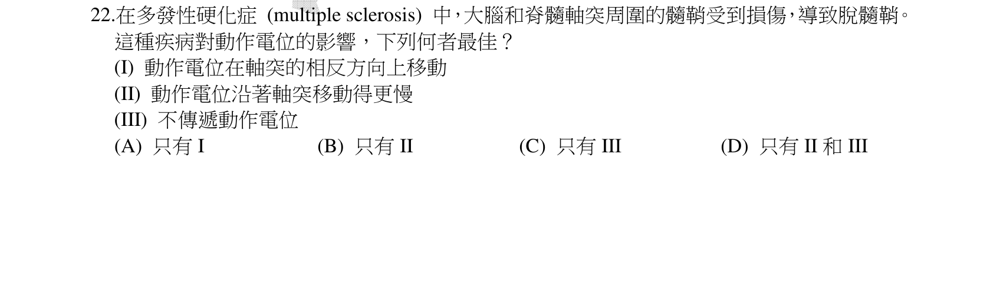
本地原卷PDF5 · 同年原答案PDF1（封存轉存本） · 同年釋疑轉存PDF3
官方採計／來源：B 原答案：B
維持原答案B
主分類：Ch48 Neurons, Synapses, and Signaling
48.3 / Conduction of Action Potentials
目錄行3212；條目起始印刷頁1075；實際目錄 PDF48
次分類：Ch49 Nervous Systems
49.1 / Glia
目錄行3248；條目起始印刷頁1090；實際目錄 PDF48
主分類理由：48.3 / Conduction of Action Potentials：髓鞘的電絕緣作用影響動作電位傳導速度。
次分類理由：49.1 / Glia：髓鞘形成膠細胞補充受損構造來源
科學說明：原表B且公告維持，指II速度減慢。嚴重去髓鞘也可能造成傳導阻斷（III），原研究模型支持此限制；I所述在軸突相反方向移動並非去髓鞘的必然後果。分類已確定，不把科學上的III可能性冒充官方新增採計。
來源涵蓋範圍：依實際最小目錄與正文；另具名補充的實讀範圍和取得限制見來源紀錄。正文小標不冒充目錄。
教材正文：印刷1075／PDF1124、印刷1076／PDF1125、印刷1090／PDF1139、印刷1091／PDF1140
補充來源：S08
另行比較：I是方向相反而非電位正負翻轉，III能否發生
首稿對I的解釋改為傳遞方向；嚴重去髓鞘可阻斷，不自行將官方B改D。主傳導、次膠細胞明確。
結論：證據確認，分類疑義已解決。完整覆核紀錄
Q23 · 6.7 / Cell Junctions 正式分類
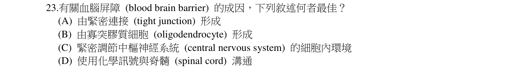
本地原卷PDF6 · 同年原答案PDF1（封存轉存本） · 已核對同年釋疑PDF2–4（未列本題）
官方採計／來源：A 原答案：A
未列已取得同年公告的7筆生物釋疑；依原表記錄，不宣稱沒有其他公告
主分類：Ch06 A Tour of the Cell
6.7 / Cell Junctions
目錄行394；條目起始印刷頁119；實際目錄 PDF36
次分類：Ch49 Nervous Systems
49.1 / Glia
目錄行3248；條目起始印刷頁1090；實際目錄 PDF48
主分類理由：6.7 / Cell Junctions：腦微血管內皮細胞間緊密連結直接限制旁細胞通行，故細胞連結為主。
次分類理由：49.1 / Glia：星狀膠細胞參與血腦障壁形成及維持，是支持作用
科學說明：原表A。緊密連結位在內皮細胞間；星狀膠細胞可誘導、維持其功能，寡樹突膠細胞主要形成中樞髓鞘。教材1090只概述膠細胞參與，1987內皮培養研究補充實際連結位置，勿把障壁完全等同星狀膠細胞本身。
來源涵蓋範圍：依實際最小目錄與正文；另具名補充的實讀範圍和取得限制見來源紀錄。正文小標不冒充目錄。
教材正文：印刷119／PDF168、印刷120／PDF169、印刷1090／PDF1139、印刷1091／PDF1140
補充來源：S09
另行比較：血腦障壁的結構原因與膠細胞協助是否應倒置
原圖A直接問tight junction；主Cell Junctions、次Glia；1987內皮培養支持細胞所在位置。
結論：證據確認，分類疑義已解決。完整覆核紀錄
Q24 · 17.5 / Using CRISPR to Edit Genes and Correct Disease-Causing Mutations 正式分類
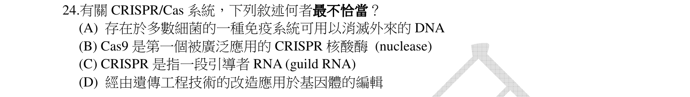
本地原卷PDF6 · 同年原答案PDF1（封存轉存本） · 同年釋疑轉存PDF3
官方採計／來源：C 原答案：C
維持原答案C
主分類：Ch17 Gene Expression: From Gene to Protein
17.5 / Using CRISPR to Edit Genes and Correct Disease-Causing Mutations
目錄行1091；條目起始印刷頁360；實際目錄 PDF39
次分類：Ch19 Viruses
19.2 / Replicative Cycles of Phages
目錄行1199；條目起始印刷頁402；實際目錄 PDF40
主分類理由：17.5 / Using CRISPR to Edit Genes and Correct Disease-Causing Mutations：CRISPR-Cas9導引RNA與DNA標的辨別對應基因編輯工具。
次分類理由：19.2 / Replicative Cycles of Phages：噬菌體複製循環正文404包含細菌CRISPR防禦機制
科學說明：原表C，公告維持C。CRISPR指基因組DNA重複與間隔序列區域，不等同導引RNA；題文guild RNA拼字保留於原圖。A「多數細菌」也過廣，2016研究完整細菌基因組樣本約40.6%有系統，特定未培養樣本更少；這些比例有年代與採樣限制，非全部當代細菌普查。
來源涵蓋範圍：依實際最小目錄與正文；另具名補充的實讀範圍和取得限制見來源紀錄。正文小標不冒充目錄。
教材正文：印刷360／PDF409、印刷361／PDF410、印刷404／PDF453、印刷405／PDF454
補充來源：S03
另行比較：DNA區域與RNA是否誤用，A多數之涵蓋是否過大
官方C與公告相合，guild拼字亦出現在公告；40.6%研究樣本限制分開列，不據此推定官方改採A。
結論：證據確認，分類疑義已解決。完整覆核紀錄
Q25 · 8.5 / Allosteric Regulation of Enzymes 正式分類
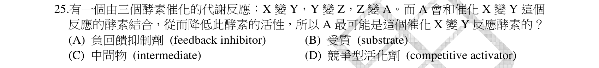
本地原卷PDF6 · 同年原答案PDF1（封存轉存本） · 已核對同年釋疑PDF2–4（未列本題）
官方採計／來源：A 原答案：A
未列已取得同年公告的7筆生物釋疑；依原表記錄，不宣稱沒有其他公告
主分類：Ch08 An Introduction to Metabolism
8.5 / Allosteric Regulation of Enzymes
目錄行539；條目起始印刷頁160；實際目錄 PDF37
主分類理由：8.5 / Allosteric Regulation of Enzymes：代謝終產物抑制前段酵素是回饋抑制，正文小標歸真實目錄Allosteric Regulation of Enzymes。
次分類理由：無另列最小次目；完整X→Y→Z→A且A回頭結合酵素，負回饋充分；沒有指定結合位，不妄推競爭抑制。
科學說明：原表A。終產物A累積時抑制X→Y，降低整條路徑通量。題目只給抑制關係，不能額外判定必然競爭活性位或確定特定結合位點。
來源涵蓋範圍：依實際最小目錄與正文；另具名補充的實讀範圍和取得限制見來源紀錄。正文小標不冒充目錄。
教材正文：印刷160／PDF209、印刷161／PDF210
補充來源：本題未另列課本外來源
另行比較：A是否只是一般受質或中間產物
完整X→Y→Z→A且A回頭結合酵素，負回饋充分；沒有指定結合位，不妄推競爭抑制。
結論：證據確認，分類疑義已解決。完整覆核紀錄
Q26 · 16.2 / Proofreading and Repairing DNA 正式分類
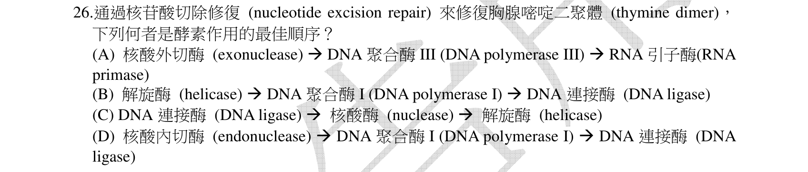
本地原卷PDF6 · 同年原答案PDF1（封存轉存本） · 已核對同年釋疑PDF2–4（未列本題）
官方採計／來源：D 原答案：D
未列已取得同年公告的7筆生物釋疑；依原表記錄，不宣稱沒有其他公告
主分類：Ch16 The Molecular Basis of Inheritance
16.2 / Proofreading and Repairing DNA
目錄行1013；條目起始印刷頁327；實際目錄 PDF39
主分類理由：16.2 / Proofreading and Repairing DNA：移除受損DNA、補回、封口屬DNA校讀與修復。
次分類理由：無另列最小次目；D移除後補回再封口；保留細菌Pol I情境及簡化酵素清單。
科學說明：原表D：內切核酸酶→DNA polymerase I→DNA ligase。這是細菌核苷酸切除修復簡化排序，未列全部解旋、切除複合體；不能把Pol I當作所有真核生物的同名主要修復酶。
來源涵蓋範圍：依實際最小目錄與正文；另具名補充的實讀範圍和取得限制見來源紀錄。正文小標不冒充目錄。
教材正文：印刷327／PDF376、印刷328／PDF377
補充來源：本題未另列課本外來源
另行比較：Pol III、RNA引子或先連接酶是否符合切除修復
D移除後補回再封口；保留細菌Pol I情境及簡化酵素清單。
結論：證據確認，分類疑義已解決。完整覆核紀錄
Q27 · 21.4 / Transposable Elements and Related Sequences 正式分類
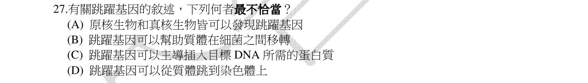
本地原卷PDF6 · 同年原答案PDF1（封存轉存本） · 已核對同年釋疑PDF2–4（未列本題）
官方採計／來源：B 原答案：B
未列已取得同年公告的7筆生物釋疑；依原表記錄，不宣稱沒有其他公告
主分類：Ch21 Genomes and Their Evolution
21.4 / Transposable Elements and Related Sequences
目錄行1327；條目起始印刷頁451；實際目錄 PDF40
次分類：Ch27 Bacteria and Archaea
27.2 / Genetic Recombination
目錄行1728；條目起始印刷頁579；實際目錄 PDF42
主分類理由：21.4 / Transposable Elements and Related Sequences：轉位因子在基因組內移動及造成變異是題目主體。
次分類理由：27.2 / Genetic Recombination：質體細菌間轉移需比較接合與DNA轉移
科學說明：原表B。但選項「可以協助質體由一細菌到另一細菌」不能以「轉位子絕不參與接合」排除：1995 Tn916 oriT研究實測可動員質體嵌合體。基礎教材將轉位與F質體接合分述，進階存在接合型轉位子；C能主導所需蛋白也須限於具功能編碼的自主轉位子；非自主元件可依賴其他元件。保留原表與概括過強的差異，不自行宣告官方改答案。
來源涵蓋範圍：依實際最小目錄與正文；另具名補充的實讀範圍和取得限制見來源紀錄。正文小標不冒充目錄。
教材正文：印刷451／PDF500、印刷452／PDF501、印刷453／PDF502、印刷579／PDF628、印刷580／PDF629、印刷581／PDF630
補充來源：S04
另行比較：轉位與接合分述能否推出絕無質體動員
原图B用「可以」而非「通常」，Tn916反例不能隱藏；C也需區分自主與非自主轉位子。官方B保留，基因組轉位主條目與接合次條目穩定。
結論：證據確認，分類疑義已解決。完整覆核紀錄
Q28 · 14.2 / Solving Complex Genetics Problems with the Rules of Probability 正式分類
本地原卷PDF6 · 同年原答案PDF1（封存轉存本） · 已核對同年釋疑PDF2–4（未列本題）
官方採計／來源：D 原答案：D
未列已取得同年公告的7筆生物釋疑；依原表記錄，不宣稱沒有其他公告
主分類：Ch14 Mendel and the Gene Idea
14.2 / Solving Complex Genetics Problems with the Rules of Probability
目錄行885；條目起始印刷頁277；實際目錄 PDF38
次分類：Ch14 Mendel and the Gene Idea
14.2 / The Multiplication and Addition Rules Applied to Monohybrid Crosses
目錄行882；條目起始印刷頁277；實際目錄 PDF38
主分類理由：14.2 / Solving Complex Genetics Problems with the Rules of Probability：四對獨立分配基因的特定基因型概率以乘法法則計算。
次分類理由：14.2 / The Multiplication and Addition Rules Applied to Monohybrid Crosses：獨立分配與各單因子分离為概率前提
科學說明：原表D。F1為AaBbCcDd，Aa×Aa得到Aa為1/2、BB為1/4、cc為1/4、Dd為1/2，AaBBccDd合為1/64。另以16×16配子組合枚舉核算4/256；不把異合型機率當1/4。
來源涵蓋範圍：依實際最小目錄與正文；另具名補充的實讀範圍和取得限制見來源紀錄。正文小標不冒充目錄。
教材正文：印刷276／PDF325、印刷277／PDF326、印刷278／PDF327
補充來源：本題未另列課本外來源
另行比較：選項D的第二基因座為BB還是bb
逐字原圖確認AaBBccDd，修正首稿bb為BB；獨立枚舉四種選項，D為4/256=1/64，主乘法概率、次獨立分配。
結論：證據確認，分類疑義已解決。完整覆核紀錄
Q29 · 18.5 / Types of Genes Associated with Cancer 正式分類
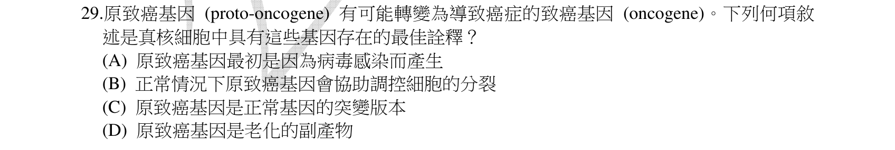
本地原卷PDF6 · 同年原答案PDF1（封存轉存本） · 已核對同年釋疑PDF2–4（未列本題）
官方採計／來源：B 原答案：B
未列已取得同年公告的7筆生物釋疑；依原表記錄，不宣稱沒有其他公告
主分類：Ch18 Regulation of Gene Expression
18.5 / Types of Genes Associated with Cancer
目錄行1163；條目起始印刷頁388；實際目錄 PDF40
次分類：Ch12 The Cell Cycle
12.3 / Loss of Cell Cycle Controls in Cancer Cells
目錄行792；條目起始印刷頁248；實際目錄 PDF38
主分類理由：18.5 / Types of Genes Associated with Cancer：原致癌基因及致癌基因變化對應與癌症相關基因種類。
次分類理由：12.3 / Loss of Cell Cycle Controls in Cancer Cells：細胞週期控制失常是生理後果
科學說明：原表B。proto-oncogene本為調節生長、分裂的正常基因，突變或過度表現可成致癌因素；不是所有正常基因都致癌，也不是必然由病毒首次帶入。
來源涵蓋範圍：依實際最小目錄與正文；另具名補充的實讀範圍和取得限制見來源紀錄。正文小標不冒充目錄。
教材正文：印刷248／PDF297、印刷249／PDF298、印刷388／PDF437、印刷389／PDF438、印刷390／PDF439
補充來源：本題未另列課本外來源
另行比較：正常proto-oncogene與突變oncogene是否相反
B調控分裂為正常功能，兩名詞分清；癌症基因種類為主，細胞週期失控為次。
結論：證據確認，分類疑義已解決。完整覆核紀錄
Q30 · 33.1 / Sponges are basal animals that lack tissues 正式分類
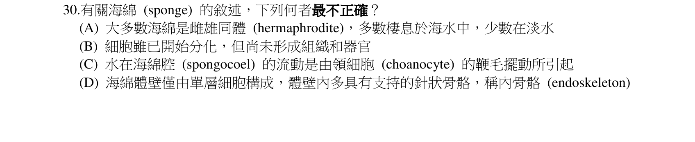
本地原卷PDF6 · 同年原答案PDF1（封存轉存本） · 已核對同年釋疑PDF2–4（未列本題）
官方採計／來源：D 原答案：D
未列已取得同年公告的7筆生物釋疑；依原表記錄，不宣稱沒有其他公告
主分類：Ch33 An Introduction to Invertebrates
33.1 / Sponges are basal animals that lack tissues
目錄行2093；條目起始印刷頁690；實際目錄 PDF44
主分類理由：33.1 / Sponges are basal animals that lack tissues：海綿構造與領細胞、孔道系統屬Porifera最小條目。
次分類理由：無另列最小次目；原圖D單層與教材雙層加中膠層不符；其餘領細胞和淡水海綿敘述不能藉此刪掉。
科學說明：原表D。海綿具有內外細胞層及膠狀中膠層，非只有單層細胞；教材分類下沒有真正組織，領細胞驅動水流。部分海綿淡水生，不能一律海生。
來源涵蓋範圍：依實際最小目錄與正文；另具名補充的實讀範圍和取得限制見來源紀錄。正文小標不冒充目錄。
教材正文：印刷690／PDF739、印刷691／PDF740
補充來源：本題未另列課本外來源
Q31 · 44.1 / Osmoregulatory Challenges and Mechanisms 正式分類
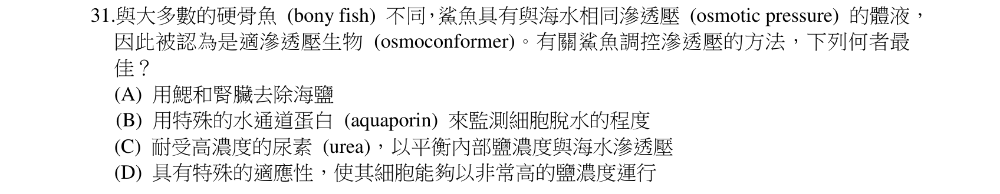
本地原卷PDF7 · 同年原答案PDF1（封存轉存本） · 已核對同年釋疑PDF2–4（未列本題）
官方採計／來源：C 原答案：C
未列已取得同年公告的7筆生物釋疑；依原表記錄，不宣稱沒有其他公告
主分類：Ch44 Osmoregulation and Excretion
44.1 / Osmoregulatory Challenges and Mechanisms
目錄行2944；條目起始印刷頁978；實際目錄 PDF47
次分類：Ch44 Osmoregulation and Excretion
44.2 / Forms of Nitrogenous Waste
目錄行2957；條目起始印刷頁982；實際目錄 PDF47
主分類理由：44.1 / Osmoregulatory Challenges and Mechanisms：鯊魚保留尿素與海水滲透關係屬滲透調節挑戰。
次分類理由：44.2 / Forms of Nitrogenous Waste：尿素兼具含氮廢物與可留存滲透溶質角色
科學說明：原表C。鯊魚尿素與TMAO等使總滲透濃度接近或略高海水，不是血中NaCl與海水相同，也不由水通道直接偵測環境。題幹「相同」是近似。
來源涵蓋範圍：依實際最小目錄與正文；另具名補充的實讀範圍和取得限制見來源紀錄。正文小標不冒充目錄。
教材正文：印刷978／PDF1027、印刷979／PDF1028、印刷980／PDF1029、印刷982／PDF1031、印刷983／PDF1032
補充來源：本題未另列課本外來源
Q32 · 39.2 / A Survey of Plant Hormones 正式分類
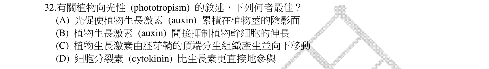
本地原卷PDF7 · 同年原答案PDF1（封存轉存本） · 已核對同年釋疑PDF2–4（未列本題）
官方採計／來源：A 原答案：A
未列已取得同年公告的7筆生物釋疑；依原表記錄，不宣稱沒有其他公告
主分類：Ch39 Plant Responses to Internal and External Signals
39.2 / A Survey of Plant Hormones
目錄行2557；條目起始印刷頁847；實際目錄 PDF45
次分類：Ch39 Plant Responses to Internal and External Signals
39.3 / Blue-Light Photoreceptors
目錄行2564；條目起始印刷頁855；實際目錄 PDF45
主分類理由：39.2 / A Survey of Plant Hormones：生長素分布不均造成莖背光側伸長，屬植物激素機制。
次分類理由：39.3 / Blue-Light Photoreceptors：向光性及藍光反應為刺激到生長素重分布的關聯
科學說明：原表A。單側光後背光側伸長較多使莖彎向光；C把胚芽鞘頂端與頂端分生組織用語混在一起，不能因此把生長素向下運輸機制一概否認。此為莖，根對濃度的伸長反應可能不同。
來源涵蓋範圍：依實際最小目錄與正文；另具名補充的實讀範圍和取得限制見來源紀錄。正文小標不冒充目錄。
教材正文：印刷845／PDF894、印刷846／PDF895、印刷847／PDF896、印刷848／PDF897、印刷849／PDF898、印刷855／PDF904、印刷856／PDF905
補充來源：本題未另列課本外來源
另行比較：生長素陰影側累積與根抑制作用是否混用
題問莖向光，A直接；C用胚芽鞘頂端分生組織，保留用詞精確性，不否認向下輸送。
結論：證據確認，分類疑義已解決。完整覆核紀錄
Q33 · 39.2 / A Survey of Plant Hormones 正式分類
本地原卷PDF7 · 同年原答案PDF1（封存轉存本） · 已核對同年釋疑PDF2–4（未列本題）
官方採計／來源：D 原答案：D
未列已取得同年公告的7筆生物釋疑；依原表記錄，不宣稱沒有其他公告
主分類：Ch39 Plant Responses to Internal and External Signals
39.2 / A Survey of Plant Hormones
目錄行2557；條目起始印刷頁847；實際目錄 PDF45
主分類理由：39.2 / A Survey of Plant Hormones：乙烯參與果實成熟和葉脫落，對應植物激素概覽最小條目。
次分類理由：無另列最小次目；A/C是重疊類別，D乙烯最合題意；成熟及脫落正文於同一真實目錄葉。
科學說明：原表D。乙烯促進相關成熟、脫落反應並和auxin交互作用；IAA就是一種auxin，A與C不是獨立激素大類。不能說所有果實成熟都同樣依賴乙烯躍變。
來源涵蓋範圍：依實際最小目錄與正文；另具名補充的實讀範圍和取得限制見來源紀錄。正文小標不冒充目錄。
教材正文：印刷847／PDF896、印刷848／PDF897、印刷853／PDF902、印刷854／PDF903
補充來源：本題未另列課本外來源
另行比較：IAA與auxin是否應視為兩個不同激素
A/C是重疊類別，D乙烯最合題意；成熟及脫落正文於同一真實目錄葉。
結論：證據確認，分類疑義已解決。完整覆核紀錄
Q34 · 44.4 / Adaptations of the Vertebrate Kidney to Diverse Environments 正式分類
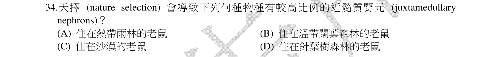
本地原卷PDF7 · 同年原答案PDF1（封存轉存本） · 已核對同年釋疑PDF2–4（未列本題）
官方採計／來源：C 原答案：C
未列已取得同年公告的7筆生物釋疑；依原表記錄，不宣稱沒有其他公告
主分類：Ch44 Osmoregulation and Excretion
44.4 / Adaptations of the Vertebrate Kidney to Diverse Environments
目錄行2980；條目起始印刷頁991；實際目錄 PDF47
次分類：Ch44 Osmoregulation and Excretion
44.4 / Solute Gradients and Water Conservation
目錄行2977；條目起始印刷頁989；實際目錄 PDF47
主分類理由：44.4 / Adaptations of the Vertebrate Kidney to Diverse Environments：沙漠哺乳類長亨利氏環為脊椎動物腎臟環境適應。
次分類理由：44.4 / Solute Gradients and Water Conservation：髓質溶質梯度及水分保留解釋長環效果
科學說明：原表C。較多近髓質腎元與長環有助建立高滲梯度、濃縮尿液；環的長短是可受選擇的差異，不是個體因需要而目的性長出。正文989對Australian hopping mice誤稱小有袋類不沿用，991的哺乳類腎臟比較為本題依據。
來源涵蓋範圍：依實際最小目錄與正文；另具名補充的實讀範圍和取得限制見來源紀錄。正文小標不冒充目錄。
教材正文：印刷985／PDF1034、印刷986／PDF1035、印刷989／PDF1038、印刷990／PDF1039、印刷991／PDF1040、印刷992／PDF1041、印刷993／PDF1042
補充來源：本題未另列課本外來源
另行比較：沙漠老鼠需要的是多髓質環還是較多濾過量
C適應缺水、長環提高濃縮能力；不把教材另一段對hopping mice的類群誤稱沿用進答案。
結論：證據確認，分類疑義已解決。完整覆核紀錄
Q35 · 10.4 / The Calvin cycle uses the chemical energy of ATP and NADPH to reduce CO2 to sugar 正式分類
本地原卷PDF7 · 同年原答案PDF1（封存轉存本） · 已核對同年釋疑PDF2–4（未列本題）
官方採計／來源：A 原答案：A
未列已取得同年公告的7筆生物釋疑；依原表記錄，不宣稱沒有其他公告
主分類：Ch10 Photosynthesis
10.4 / The Calvin cycle uses the chemical energy of ATP and NADPH to reduce CO2 to sugar
目錄行665；條目起始印刷頁201；實際目錄 PDF37
次分類：Ch10 Photosynthesis
10.2 / Chloroplasts: The Sites of Photosynthesis in Plants
目錄行631；條目起始印刷頁189；實際目錄 PDF37
主分類理由：10.4 / The Calvin cycle uses the chemical energy of ATP and NADPH to reduce CO2 to sugar：Calvin循環所在地及功能對應10.4概念；真實目錄未再列其三階段為葉。
次分類理由：10.2 / Chloroplasts: The Sites of Photosynthesis in Plants：葉綠體構造區分基質、類囊體膜與腔
科學說明：原表A。Calvin循環酵素主要在葉綠體基質；類囊體膜為光反應電子傳遞與ATP合成相關結構，不是Calvin循環所在地。
來源涵蓋範圍：依實際最小目錄與正文；另具名補充的實讀範圍和取得限制見來源紀錄。正文小標不冒充目錄。
教材正文：印刷189／PDF238、印刷190／PDF239、印刷191／PDF240、印刷201／PDF250、印刷202／PDF251
補充來源：本題未另列課本外來源
另行比較：基質與類囊體腔是否混用
原圖A stroma清楚；10.4無更小實際葉，6/10的葉綠體構造只作次證據，不造目錄。
結論：證據確認，分類疑義已解決。完整覆核紀錄
Q36 · 10.5 / C4 Plants 正式分類
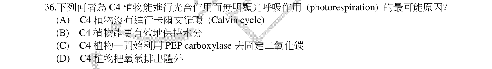
本地原卷PDF7 · 同年原答案PDF1（封存轉存本） · 同年釋疑轉存PDF3
官方採計／來源：C 原答案：C
維持原答案C
主分類：Ch10 Photosynthesis
10.5 / C4 Plants
目錄行676；條目起始印刷頁203；實際目錄 PDF37
次分類：Ch10 Photosynthesis
10.5 / Photorespiration: An Evolutionary Relic?
目錄行673；條目起始印刷頁203；實際目錄 PDF37
主分類理由：10.5 / C4 Plants：C4初始固定酵素及細胞分工是直接最小考點。
次分類理由：10.5 / Photorespiration: An Evolutionary Relic?：光呼吸是C4濃縮CO2機制降低的代價
科學說明：原表C且釋疑維持C。PEP carboxylase先在葉肉細胞固定CO2形成四碳產物，再到維管束鞘釋出CO2供Rubisco。公告將初始固定寫在維管束鞘，與教材204圖10.19不符；原題為「無明顯光呼吸」，公告說不會進行且稱為消耗過多光反應產物；教材以Rubisco氧合及濃縮CO2解釋，不作目的性推論。答案C保留，錯誤理由不沿用。
來源涵蓋範圍：依實際最小目錄與正文；另具名補充的實讀範圍和取得限制見來源紀錄。正文小標不冒充目錄。
教材正文：印刷203／PDF252、印刷204／PDF253、印刷205／PDF254
補充來源：本題未另列課本外來源
另行比較：原題「無明顯」與公告「不會」、固定細胞位置
原題較溫和，公告錯把PEP初始固定放在束鞘且目的性解釋光呼吸；教材204圖對照後分別記錄，不改C。
結論：證據確認，分類疑義已解決。完整覆核紀錄
Q37 · 10.5 / Photorespiration: An Evolutionary Relic? 正式分類
本地原卷PDF7 · 同年原答案PDF1（封存轉存本） · 已核對同年釋疑PDF2–4（未列本題）
官方採計／來源：C 原答案：C
未列已取得同年公告的7筆生物釋疑；依原表記錄，不宣稱沒有其他公告
主分類：Ch10 Photosynthesis
10.5 / Photorespiration: An Evolutionary Relic?
目錄行673；條目起始印刷頁203；實際目錄 PDF37
主分類理由：10.5 / Photorespiration: An Evolutionary Relic?：Rubisco氧合反應造成光呼吸耗能與碳損失。
次分類理由：無另列最小次目；原圖C是產CO2、耗ATP及O2，與氧合回收吻合，不混成粒線體氧化磷酸化。
科學說明：原表C。光呼吸消耗O2，回收流程需能量並釋CO2，不能說它產生ATP以驅動Calvin循環。C4及CAM減少此損失而非使所有狀況絕對歸零。
來源涵蓋範圍：依實際最小目錄與正文；另具名補充的實讀範圍和取得限制見來源紀錄。正文小標不冒充目錄。
教材正文：印刷203／PDF252、印刷204／PDF253
補充來源：本題未另列課本外來源
另行比較：O2、CO2與ATP的收支是否抄反
原圖C是產CO2、耗ATP及O2，與氧合回收吻合，不混成粒線體氧化磷酸化。
結論：證據確認，分類疑義已解決。完整覆核紀錄
Q38 · 10.4 / The Calvin cycle uses the chemical energy of ATP and NADPH to reduce CO2 to sugar 正式分類
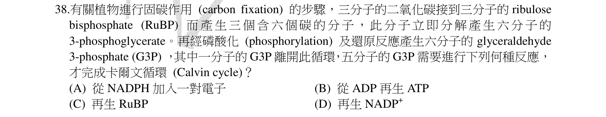
本地原卷PDF7 · 同年原答案PDF1（封存轉存本） · 已核對同年釋疑PDF2–4（未列本題）
官方採計／來源：C 原答案：C
未列已取得同年公告的7筆生物釋疑；依原表記錄，不宣稱沒有其他公告
主分類：Ch10 Photosynthesis
10.4 / The Calvin cycle uses the chemical energy of ATP and NADPH to reduce CO2 to sugar
目錄行665；條目起始印刷頁201；實際目錄 PDF37
主分類理由：10.4 / The Calvin cycle uses the chemical energy of ATP and NADPH to reduce CO2 to sugar：Calvin循環再生RuBP的碳數與ATP消耗屬10.4最小真實概念。
次分類理由：無另列最小次目；5×3=3×5，需ATP；C不變，整輪9ATP與再生3ATP分開。
科學說明：原表C。五個三碳G3P共15C重排成三個五碳RuBP共15C，並消耗3 ATP；不是再生ATP。淨出一G3P的整輪成本另為9 ATP與6 NADPH，不能混為此單一步驟。
來源涵蓋範圍：依實際最小目錄與正文；另具名補充的實讀範圍和取得限制見來源紀錄。正文小標不冒充目錄。
教材正文：印刷201／PDF250、印刷202／PDF251
補充來源：本題未另列課本外來源
另行比較：15碳是否守恆，再生RuBP是否等於再生ATP
5×3=3×5，需ATP；C不變，整輪9ATP與再生3ATP分開。
結論：證據確認，分類疑義已解決。完整覆核紀錄
Q39 · 7.5 / Endocytosis 正式分類
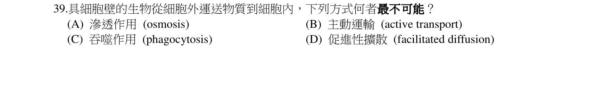
本地原卷PDF7 · 同年原答案PDF1（封存轉存本） · 已核對同年釋疑PDF2–4（未列本題）
官方採計／來源：C 原答案：C
未列已取得同年公告的7筆生物釋疑；依原表記錄，不宣稱沒有其他公告
主分類：Ch07 Membrane Structure and Function
7.5 / Endocytosis
目錄行466；條目起始印刷頁139；實際目錄 PDF36
次分類：Ch06 A Tour of the Cell
6.7 / Cell Walls of Plants
目錄行388；條目起始印刷頁118；實際目錄 PDF36
主分類理由：7.5 / Endocytosis：吞噬為膜包裹大型顆粒的胞吞，細胞壁限制偽足伸展。
次分類理由：6.7 / Cell Walls of Plants：植物細胞壁構造提供限制原因
科學說明：原表C。細胞壁使整體吞噬大型食物顆粒困難；不等於有細胞壁就不能進行任何內吞，小囊泡胞吞、載體運輸與滲透不可混同。
來源涵蓋範圍：依實際最小目錄與正文；另具名補充的實讀範圍和取得限制見來源紀錄。正文小標不冒充目錄。
教材正文：印刷118／PDF167、印刷119／PDF168、印刷139／PDF188、印刷140／PDF189
補充來源：本題未另列課本外來源
Q40 · 39.3 / Photoperiodism and Responses to Seasons 正式分類
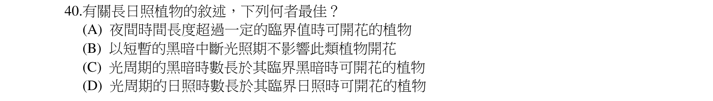
本地原卷PDF8 · 同年原答案PDF1（封存轉存本） · 同年釋疑轉存PDF4
官方採計／來源：D 原答案：D
維持原答案D
主分類：Ch39 Plant Responses to Internal and External Signals
39.3 / Photoperiodism and Responses to Seasons
目錄行2576；條目起始印刷頁859；實際目錄 PDF45
次分類：Ch39 Plant Responses to Internal and External Signals
39.3 / Phytochrome Photoreceptors
目錄行2567；條目起始印刷頁856；實際目錄 PDF45
主分類理由：39.3 / Photoperiodism and Responses to Seasons：光週期開花及連續暗期是最小直接考點。
次分類理由：39.3 / Phytochrome Photoreceptors：光敏素協助感受光照時機，不能只以總時數替代連續夜長
科學說明：原表D且公告維持D。教材859分清日間短暫黑暗和夜間短暫照光；長日植物通常是短夜植物。公告以夜間照光的結論回答日間中斷，推論方向不符，典型夜長模型可容許B。實驗物種與中斷時長未充分指定，不把教材模型當成所有物種B的證明，也不擅改官方D。
來源涵蓋範圍：依實際最小目錄與正文；另具名補充的實讀範圍和取得限制見來源紀錄。正文小標不冒充目錄。
教材正文：印刷856／PDF905、印刷857／PDF906、印刷858／PDF907、印刷859／PDF908、印刷860／PDF909、印刷861／PDF910
補充來源：本題未另列課本外來源
另行比較：日間黑暗中斷与夜間照光是否同一處理
原圖B為日間中斷，公告以夜間照光推日間結論。官方D明確，模型與物種限制另欄，分類光週期已解決。
結論：證據確認，分類疑義已解決。完整覆核紀錄
Q41 · 39.5 / Defenses Against Pathogens 正式分類
本地原卷PDF8 · 同年原答案PDF1（封存轉存本） · 已核對同年釋疑PDF2–4（未列本題）
官方採計／來源：C 原答案：C
未列已取得同年公告的7筆生物釋疑；依原表記錄，不宣稱沒有其他公告
主分類：Ch39 Plant Responses to Internal and External Signals
39.5 / Defenses Against Pathogens
目錄行2596；條目起始印刷頁866；實際目錄 PDF45
主分類理由：39.5 / Defenses Against Pathogens：感染誘發植物抗菌物質屬防禦病原最小條目。
次分類理由：無另列最小次目；英文專名與真菌感染情境完整；原研究camalexin補正文專名不足，主植物防禦病原。
科學說明：原表C。phytoalexins是受誘導累積的抗菌次級代謝物，例如阿拉伯芥camalexin；題文中文「植物防禦素」不應混同蛋白質defensins。教材866–869涵蓋誘導防禦，未直接詳述此專名，以原始camalexin研究補充。
來源涵蓋範圍：依實際最小目錄與正文；另具名補充的實讀範圍和取得限制見來源紀錄。正文小標不冒充目錄。
教材正文：印刷866／PDF915、印刷867／PDF916、印刷868／PDF917、印刷869／PDF918
補充來源：S10
另行比較：原文phytoalexins是否等於蛋白defensins
英文專名與真菌感染情境完整；原研究camalexin補正文專名不足，主植物防禦病原。
結論：證據確認，分類疑義已解決。完整覆核紀錄
Q42 · 37.3 / Bacteria and Plant Nutrition 正式分類
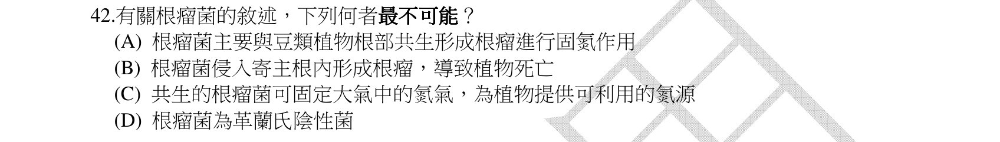
本地原卷PDF8 · 同年原答案PDF1（封存轉存本） · 已核對同年釋疑PDF2–4（未列本題）
官方採計／來源：B 原答案：B
未列已取得同年公告的7筆生物釋疑；依原表記錄，不宣稱沒有其他公告
主分類：Ch37 Soil and Plant Nutrition
37.3 / Bacteria and Plant Nutrition
目錄行2463；條目起始印刷頁814；實際目錄 PDF45
次分類：Ch27 Bacteria and Archaea
27.3 / Nitrogen Metabolism
目錄行1738；條目起始印刷頁582；實際目錄 PDF42
主分類理由：37.3 / Bacteria and Plant Nutrition：根瘤菌與豆科根瘤的固氮互利為直接考點。
次分類理由：27.3 / Nitrogen Metabolism：原核生物代謝多樣性提供固氮能力背景
科學說明：原表B。根瘤菌感染與分化形成互利根瘤供氮，非正常情形使植物死亡；不要把感染一詞等同致病。
來源涵蓋範圍：依實際最小目錄與正文；另具名補充的實讀範圍和取得限制見來源紀錄。正文小標不冒充目錄。
教材正文：印刷582／PDF631、印刷583／PDF632、印刷814／PDF863、印刷815／PDF864、印刷816／PDF865、印刷817／PDF866
補充來源：本題未另列課本外來源
Q43 · 10.3 / A Comparison of Chemiosmosis in Chloroplasts and Mitochondria 正式分類
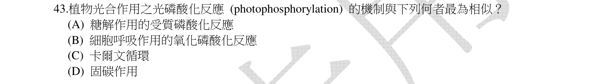
本地原卷PDF8 · 同年原答案PDF1（封存轉存本） · 已核對同年釋疑PDF2–4（未列本題）
官方採計／來源：B 原答案：B
未列已取得同年公告的7筆生物釋疑；依原表記錄，不宣稱沒有其他公告
主分類：Ch10 Photosynthesis
10.3 / A Comparison of Chemiosmosis in Chloroplasts and Mitochondria
目錄行662；條目起始印刷頁199；實際目錄 PDF37
次分類：Ch09 Cellular Respiration and Fermentation
9.4 / Chemiosmosis: The Energy-Coupling Mechanism
目錄行585；條目起始印刷頁175；實際目錄 PDF37
主分類理由：10.3 / A Comparison of Chemiosmosis in Chloroplasts and Mitochondria：光反應及呼吸鏈皆透過跨膜H+梯度與ATP合成酶耦合。
次分類理由：9.4 / Chemiosmosis: The Energy-Coupling Mechanism：氧化磷酸化的化學滲透為被比較機制
科學說明：原表B。電子傳遞、質子動力勢與ATP合成酶是共通點；光反應用光能和水供電子，呼吸鏈常用還原型輔酶，不能說全部電子來源相同。不是受質層次磷酸化。
來源涵蓋範圍：依實際最小目錄與正文；另具名補充的實讀範圍和取得限制見來源紀錄。正文小標不冒充目錄。
教材正文：印刷175／PDF224、印刷176／PDF225、印刷177／PDF226、印刷199／PDF248、印刷200／PDF249、印刷201／PDF250
補充來源：本題未另列課本外來源
另行比較：共用ATP是否足以把Calvin也列同機制
B共用的是電子鏈質子梯度耦合ATP合成，Calvin耗ATP無此直接產ATP機制。
結論：證據確認，分類疑義已解決。完整覆核紀錄
Q44 · 23.3 / Genetic Drift 正式分類
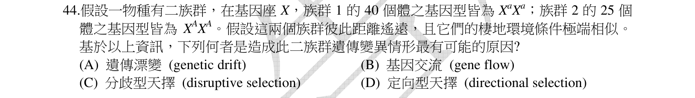
本地原卷PDF8 · 同年原答案PDF1（封存轉存本） · 同年釋疑轉存PDF4
官方採計／來源：A 原答案：A
維持原答案A
主分類：Ch23 The Evolution of Populations
23.3 / Genetic Drift
目錄行1455；條目起始印刷頁494；實際目錄 PDF41
次分類：Ch23 The Evolution of Populations
23.3 / Gene Flow
目錄行1458；條目起始印刷頁496；實際目錄 PDF41
主分類理由：23.3 / Genetic Drift：小而隔離的族群在相同環境中出現不同等位固定，最可能是遺傳漂變。
次分類理由：23.3 / Gene Flow：基因流作為隔離程度的比較解釋
科學說明：原表A，公告維持A。兩個族群分別有40個XaXa個體及25個XAXA個體，呈分歧固定（a/A為原圖X的上標）；距離遠支持基因流少但不證明為零，相同棲地也不排除一切選擇。題意問最可能，不沿用公告「僅可能」為唯一機制證明；X基因座不必是X染色體。
來源涵蓋範圍：依實際最小目錄與正文；另具名補充的實讀範圍和取得限制見來源紀錄。正文小標不冒充目錄。
教材正文：印刷494／PDF543、印刷495／PDF544、印刷496／PDF545
補充來源：本題未另列課本外來源
另行比較：40及25是個體數還是族群數，X是否必為性染色體
原圖只有兩族群，各40及25個體。修正首稿誤述，保留XaXa和XAXA上標意義；差異固定最可能漂變，未將兩群合併作HWE。
結論：證據確認，分類疑義已解決。完整覆核紀錄
Q45 · 22.3 / Direct Observations of Evolutionary Change 正式分類
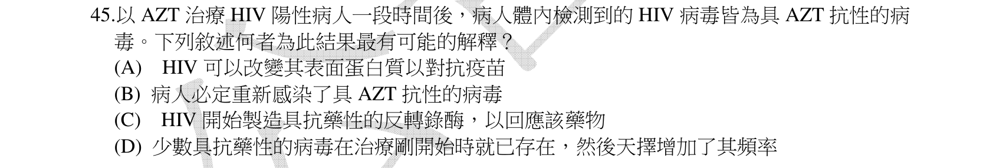
本地原卷PDF8 · 同年原答案PDF1（封存轉存本） · 已核對同年釋疑PDF2–4（未列本題）
官方採計／來源：D 原答案：D
未列已取得同年公告的7筆生物釋疑；依原表記錄，不宣稱沒有其他公告
主分類：Ch22 Descent with Modification: A Darwinian View of Life
22.3 / Direct Observations of Evolutionary Change
目錄行1409；條目起始印刷頁477；實際目錄 PDF41
次分類：Ch19 Viruses
19.2 / Replicative Cycles of Animal Viruses
目錄行1202；條目起始印刷頁404；實際目錄 PDF40
主分類理由：22.3 / Direct Observations of Evolutionary Change：耐藥HIV在AZT選擇下增加是自然選擇的直接例子。
次分類理由：19.2 / Replicative Cycles of Animal Viruses：HIV複製與反轉錄酶提供抗病毒藥物作用背景
科學說明：原表D。原有或複製時產生的耐藥變異受藥物篩選，敏感株下降而耐藥株相對增加；不是病毒因需要而定向突變，不必假設重新感染。教材提供抗藥選擇及HIV機制，不冒稱所列段直接測試本題病人的AZT。
來源涵蓋範圍：依實際最小目錄與正文；另具名補充的實讀範圍和取得限制見來源紀錄。正文小標不冒充目錄。
教材正文：印刷404／PDF453、印刷405／PDF454、印刷406／PDF455、印刷477／PDF526、印刷478／PDF527
補充來源：本題未另列課本外來源
另行比較：耐藥是否在治療後因需求定向产生
D明述少數開始即存在；此選項比重新感染或疫苗說明合理，保留自然選擇主、HIV次。
結論：證據確認，分類疑義已解決。完整覆核紀錄
Q46 · 35.1 / Vascular Plant Organs: Roots, Stems, and Leaves 正式分類
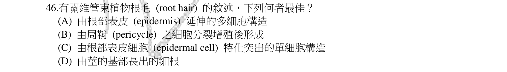
本地原卷PDF8 · 同年原答案PDF1（封存轉存本） · 已核對同年釋疑PDF2–4（未列本題）
官方採計／來源：C 原答案：C
未列已取得同年公告的7筆生物釋疑；依原表記錄，不宣稱沒有其他公告
主分類：Ch35 Vascular Plant Structure, Growth, and Development
35.1 / Vascular Plant Organs: Roots, Stems, and Leaves
目錄行2283；條目起始印刷頁759；實際目錄 PDF44
次分類：Ch35 Vascular Plant Structure, Growth, and Development
35.3 / Primary Growth of Roots
目錄行2300；條目起始印刷頁768；實際目錄 PDF44
主分類理由：35.1 / Vascular Plant Organs: Roots, Stems, and Leaves：根毛為根表皮細胞延伸，直接對應Roots葉。
次分類理由：35.3 / Primary Growth of Roots：根初生生長提供表皮分化與側根來源比較
科學說明：原表C。根毛是一表皮細胞的延伸，非多細胞側根；側根起自內鞘，不能互換。
來源涵蓋範圍：依實際最小目錄與正文；另具名補充的實讀範圍和取得限制見來源紀錄。正文小標不冒充目錄。
教材正文：印刷759／PDF808、印刷760／PDF809、印刷761／PDF810、印刷768／PDF817、印刷769／PDF818
補充來源：本題未另列課本外來源
Q47 · 36.3 / Bulk Flow Transport via the Xylem 正式分類
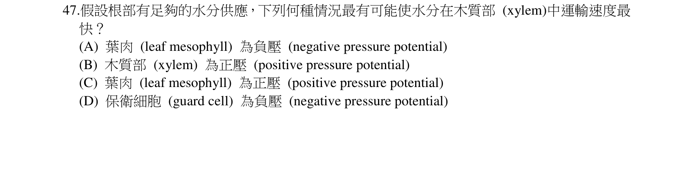
本地原卷PDF8 · 同年原答案PDF1（封存轉存本） · 已核對同年釋疑PDF2–4（未列本題）
官方採計／來源：A 原答案：A
未列已取得同年公告的7筆生物釋疑；依原表記錄，不宣稱沒有其他公告
主分類：Ch36 Resource Acquisition and Transport in Vascular Plants
36.3 / Bulk Flow Transport via the Xylem
目錄行2381；條目起始印刷頁792；實際目錄 PDF45
次分類：Ch36 Resource Acquisition and Transport in Vascular Plants
36.2 / Short-Distance Transport of Water Across Plasma Membranes
目錄行2365；條目起始印刷頁788；實際目錄 PDF45
主分類理由：36.3 / Bulk Flow Transport via the Xylem：蒸散造成葉壁負壓並以內聚張力拉升木質液。
次分類理由：36.2 / Short-Distance Transport of Water Across Plasma Membranes：水勢梯度提供方向與驅動力
科學說明：原表A。葉肉細胞壁的水蒸發形成張力、降低水勢，水沿梯度補入；原題的「葉肉為負壓」需區分細胞壁質外體負壓與活細胞通常正膨壓。水分充足只是條件，沒有完整阻力與梯度數值不能算絕對最大流量。
來源涵蓋範圍：依實際最小目錄與正文；另具名補充的實讀範圍和取得限制見來源紀錄。正文小標不冒充目錄。
教材正文：印刷788／PDF837、印刷789／PDF838、印刷790／PDF839、印刷791／PDF840、印刷792／PDF841、印刷793／PDF842、印刷794／PDF843、印刷795／PDF844
補充來源：本題未另列課本外來源
另行比較：原文是否真的說細胞壓力「最負」
原图A只有葉肉為負壓，首稿引句不精確，改為葉肉質外體水膜負壓的解讀；主內聚張力，次水勢。
結論：證據確認，分類疑義已解決。完整覆核紀錄
Q48 · 10.3 / Linear Electron Flow 正式分類
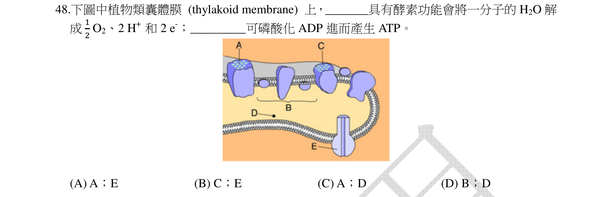
本地原卷PDF9 · 同年原答案PDF1（封存轉存本） · 已核對同年釋疑PDF2–4（未列本題）
官方採計／來源：A 原答案：A
未列已取得同年公告的7筆生物釋疑；依原表記錄，不宣稱沒有其他公告
主分類：Ch10 Photosynthesis
10.3 / Linear Electron Flow
目錄行656；條目起始印刷頁197；實際目錄 PDF37
次分類：Ch10 Photosynthesis
10.3 / A Comparison of Chemiosmosis in Chloroplasts and Mitochondria
目錄行662；條目起始印刷頁199；實際目錄 PDF37
主分類理由：10.3 / Linear Electron Flow：圖中A是PSII放氧端，以線性電子流辨識水分解位置。
次分類理由：10.3 / A Comparison of Chemiosmosis in Chloroplasts and Mitochondria：E是ATP合成酶，需以化學滲透辨識ADP與Pi反應位置
科學說明：原表A。A處H2O→1/2 O2+2H+ +2e−，E處ADP+Pi合成ATP；B為中間電子鏈，C為PSI，D是類囊體腔。原圖分數1/2、A–E位置完整保留，不能只看文字層辨反應。
來源涵蓋範圍：依實際最小目錄與正文；另具名補充的實讀範圍和取得限制見來源紀錄。正文小標不冒充目錄。
教材正文：印刷197／PDF246、印刷198／PDF247、印刷199／PDF248、印刷200／PDF249
補充來源：本題未另列課本外來源
另行比較：半個O2及A與E是否因文字層漏失而誤讀
完整圖核A放氧PSII、E ATP合成酶，原圖1/2、2H+、2e−及A–D選項完整；兩個10.3最小葉都存。
結論：證據確認，分類疑義已解決。完整覆核紀錄
Q49 · 10.4 / The Calvin cycle uses the chemical energy of ATP and NADPH to reduce CO2 to sugar 正式分類
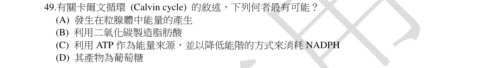
本地原卷PDF9 · 同年原答案PDF1（封存轉存本） · 已核對同年釋疑PDF2–4（未列本題）
官方採計／來源：C 原答案：C
未列已取得同年公告的7筆生物釋疑；依原表記錄，不宣稱沒有其他公告
主分類：Ch10 Photosynthesis
10.4 / The Calvin cycle uses the chemical energy of ATP and NADPH to reduce CO2 to sugar
目錄行665；條目起始印刷頁201；實際目錄 PDF37
主分類理由：10.4 / The Calvin cycle uses the chemical energy of ATP and NADPH to reduce CO2 to sugar：Calvin循環利用ATP及NADPH將CO2轉為有機碳。
次分類理由：無另列最小次目；C應是NADPH失去還原當量而被氧化，G3P才是直接淨產物；未把葡萄糖簡稱當直接產物。
科學說明：原表C。ATP提供能量，NADPH提供還原力並被氧化為NADP+；直接淨產物是G3P，之後可形成葡萄糖等，不是整個循環一步直接排出葡萄糖。
來源涵蓋範圍：依實際最小目錄與正文；另具名補充的實讀範圍和取得限制見來源紀錄。正文小標不冒充目錄。
教材正文：印刷201／PDF250、印刷202／PDF251
補充來源：本題未另列課本外來源
另行比較：NADPH下降能階與還原NADPH是否同義
C應是NADPH失去還原當量而被氧化，G3P才是直接淨產物；未把葡萄糖簡稱當直接產物。
結論：證據確認，分類疑義已解決。完整覆核紀錄
Q50 · 38.3 / Plant Biotechnology and Genetic Engineering 正式分類
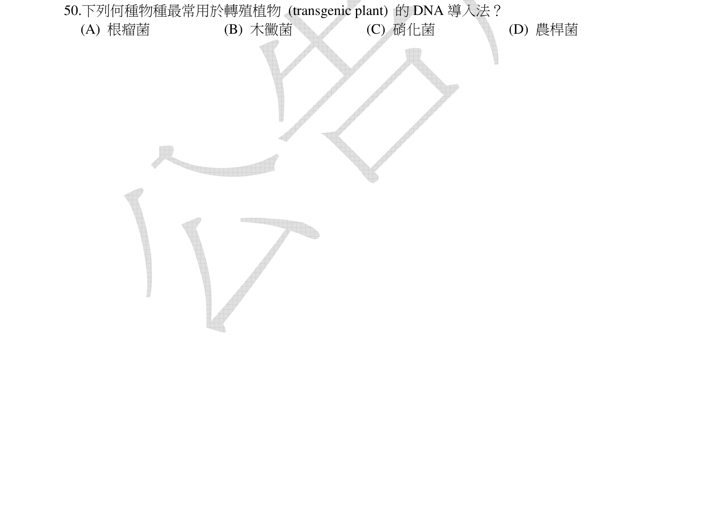
本地原卷PDF9 · 同年原答案PDF1（封存轉存本） · 已核對同年釋疑PDF2–4（未列本題）
官方採計／來源：D 原答案：D
未列已取得同年公告的7筆生物釋疑；依原表記錄，不宣稱沒有其他公告
主分類：Ch38 Angiosperm Reproduction and Biotechnology
38.3 / Plant Biotechnology and Genetic Engineering
目錄行2527；條目起始印刷頁837；實際目錄 PDF45
次分類：Ch20 DNA Tools and Biotechnology
20.4 / Agricultural Applications
目錄行1283；條目起始印刷頁437；實際目錄 PDF40
主分類理由：38.3 / Plant Biotechnology and Genetic Engineering：農桿菌介導植物轉基因屬植物生物技術與基因工程。
次分類理由：20.4 / Agricultural Applications：DNA工具的農業應用補充轉基因目的
科學說明：原表D。Agrobacterium的Ti質體/T-DNA系統可將外源基因導入植物細胞；本地教材837談農桿菌天然水平轉移但未細列Ti系統。1983原研究以改造Ti質體導入矮牽牛與菸草細胞補足直接機制，不把整個Ti質體都說成必然完整整合。
來源涵蓋範圍：依實際最小目錄與正文；另具名補充的實讀範圍和取得限制見來源紀錄。正文小標不冒充目錄。
教材正文：印刷437／PDF486、印刷438／PDF487、印刷837／PDF886、印刷838／PDF887
補充來源：S11
另行比較：農桿菌與固氮根瘤菌是否混同
D農桿菌Ti/T-DNA系統，原研究補課本沒有詳列的載體機制；主38.3、次20.4農業應用。
結論：證據確認，分類疑義已解決。完整覆核紀錄
目前篩選沒有符合的題目；本年度總數仍為50題。
補充來源
查證日期：2026-09-10。使用原始研究摘要、官方資料與作者教材，不宣稱所有出版商全文已取得。詳細界線見來源紀錄。
- S01 Termites and subsocial roaches inherited many bacterial-borne CAZymes (2024)
白蟻基因組自身有纖維素酶，消化仍大幅倚賴共生微生物。
實讀範圍：摘要與引言纖維素酶、菌群範圍段；本地HTML文字擷取窗口
原始來源1
限制：研究195白蟻及一Cryptocercus腸道資料，非所有白蟻普查；非全文逐字讀。 - S02 Single-cell RNA-seq uncovers novel metabolic functions of Schwann cells beyond myelination (2023)
非髓鞘Schwann細胞有營養支持相關細胞間訊號。
實讀範圍：web取得摘要，區分髓鞘與非髓鞘群的結果
原始來源1
限制：本地HTTP403未獲頁面檔，僅作者研究摘要實讀與自寫紀錄；小鼠糖尿病情境不等於每個神經元定量實驗。 - S03 Major bacterial lineages are essentially devoid of CRISPR-Cas viral defence systems (2016)
完整細菌基因組樣本約40.6%，且類群分布不均，不能無條件稱多數。
實讀範圍：摘要、引言與results系統分布段；本地HTML檢查
原始來源1
限制：2740完整基因組及特定未培養採樣有年代、環境偏差，非全體現生細菌比例。 - S04 A functional origin of transfer (oriT) on the conjugative transposon Tn916 (1995)
Tn916的oriT片段與染色體轉位子作用可動員質體嵌合體。
實讀範圍：完整摘要；466bp及pWM401實驗敘述
原始來源1
限制：僅此系統的原始實驗，不代表所有轉位子都可接合；未宣稱下載或讀完付費全文。 - S05 A cellulase gene of termite origin (1998)
Reticulitermes speratus自身RsEG編碼內切β-1,4-glucanase，反駁動物絕无纖維素酶。
實讀範圍：本地取得之Nature摘要預覽完整段
原始來源1
限制：訂閱全文未取得，未把預覽當全文；不抹除共生者協助消化。 - S06 Molecular Nature of Spemann’s Organizer: the Role of Xenopus goosecoid (1991)
組織者基因表現及擾動和體軸誘導相关，結果依處理而異。
實讀範圍：web引言及goosecoid Expression Correlates with Amount of Organizer、UV/LiCl、secondary axes段
原始來源1
限制：非本題未指定動物的全部切除實驗；不以外推擅改B。 - S07 Crystal structure of mammalian poly(A) polymerase in complex with ATP analog (2000)
PAP為不需模板的RNA聚合酶，仍需受體RNA及ATP。
實讀範圍：web原研究結構、催化與結論段；PubMed摘要
原始來源1 · 原始來源2
限制：牛酵素結構研究；部分直接PMC開啟曾返回captcha，研究文字由web搜尋索引取得，無冒充完整HTTP原始檔。 - S08 Impulse conduction in multiple sclerosis: theoretical basis (1974)
去髓鞘數值模型可出現傳導阻斷，不限於減慢。
實讀範圍：PubMed原研究完整摘要
原始來源1
限制：模型與溫度條件相關，不推定所有患者皆阻斷，無臨床用藥建議。 - S09 Astrocyte-mediated induction of tight junctions in brain capillary endothelium (1987)
星狀膠細胞條件培養液及適當細胞外基質可促腦微血管內皮緊密連結。
實讀範圍：PubMed原研究完整摘要
原始來源1
限制：大鼠內皮體外培養，不宣稱單一因子可完全再現人體血腦障壁。 - S10 A fungal-responsive MAPK cascade regulates phytoalexin biosynthesis in Arabidopsis (2008)
真菌誘發的MPK3/MPK6調節camalexin合成，支持誘導抗菌次級代謝物。
實讀範圍：web原研究摘要及引言最後研究總結段
原始來源1
限制：阿拉伯芥與Botrytis cinerea結果，非所有植物同一物質；直接PMC開啟曾captcha，無本地HTTP全文宣稱。 - S11 Expression of bacterial genes in plant cells (1983)
改造Ti質體將抗生素抗性嵌合基因導入矮牽牛及菸草細胞并測表現。
實讀範圍：PubMed原研究完整摘要
原始來源1
限制：具體細胞轉殖實驗，不把T-DNA轉移說成整Ti質體必然全部整合。